[!IMPORTANT] Mundo 1 · Primeiros passos · Rota do jogo: etapa 2 de 29
Missão: fazer o programa escolher caminhos com
if,elseeswitch.Vem de: Módulo 01 · Fundamentos de C. Segue para: Módulo 03 · Laços.
Checkpoints desta fase:
- Ler os assuntos 0012 a 0019 e refazer os exemplos
- Resolver os 4 exercícios de cada assunto, escrevendo o código sozinho
- Fechar a lista prática (P0201 a P0230)
- Enfrentar os desafios do módulo
- Chefão: resolver as questões de prova do módulo sem consultar
A segunda peça de todo algoritmo: o programa escolhe um caminho. O módulo
cobre relacionais e lógicos, if, if/else, else if, o ternário e o
switch, com as pegadinhas que compilam e erram em silêncio. Depende do
módulo 01 (variáveis, scanf e seu retorno, %, math.h) e prepara o 03.
bool de <stdbool.h>&&, || e !, tabela-verdade, curto-circuito e De Morganif, as chaves e a armadilha do ; depois da condiçãoif/else e a pegadinha do = no lugar de ==else if, if aninhado e o else penduradoswitch, o break e o fall-throughNos fluxogramas, o caminho verde mostra por onde o exemplo passou.
[!TIP] Teste cada caminho e os valores de fronteira: se a regra é "a partir de R$ 200", teste 199,99, 200 e 200,01. A maioria dos erros de decisão é a troca de
>por>=.
Os exercícios com teclado aceitam entrada por pipe, o que facilita testar vários casos:
gcc ~/LPEDC/material/A028.c -o ~/LPEDC/material/A028 && printf '12.90 8.50\n' | ~/LPEDC/material/A028
Os exercícios "ache o erro" trazem código quebrado de propósito e mostram avisos; o enunciado avisa quando é o caso. Nos demais, zero avisos.
| # | Assunto |
|---|---|
| 0012 | Relacionais e a verdade em C |
| 0013 | Lógicos: E, OU, NÃO |
| 0014 | if |
| 0015 | if/else e o = no lugar do == |
| 0016 | else if, if aninhado e o else pendurado |
| 0017 | Ternário: condição ? a : b |
| 0018 | switch, case, break e fall-through |
| 0019 | Juntando tudo: a conta de luz |
[!NOTE] Cada assunto é um capítulo: Conceito (a explicação), Exemplos de uso (programas que compilam sozinhos: rode com o comando abaixo de cada um e compare com a saída no fim do código) e Exercícios (cada um é um arquivo em
material/com o esqueleto, as dicas e o espaço para a resposta; resoluções em_respostas/02-condicionais/).
Os programas do módulo 01 seguiam sempre o mesmo caminho, de cima para baixo. Um programa que decide precisa, antes de tudo, de uma pergunta de sim ou não: a compra passou de R$ 200? A senha está certa? O saldo dá? Este módulo inteiro se apoia nessas perguntas, e elas começam numa comparação.
Pense na tabela do campeonato no fim do domingo. O jogo terminou 2 x 1 para o mandante, e a tabela precisa saber três coisas: o mandante fez mais gols? Empatou? Fez menos? Cada resposta é sim ou não, e dela sai a pontuação: 3 pontos pela vitória, 1 pelo empate, 0 pela derrota.
Para fazer essas perguntas, o C tem seis operadores relacionais, que
comparam dois valores: > (maior), < (menor), >= (maior ou igual),
<= (menor ou igual), == (igual, com dois sinais) e != (diferente)
(DEITEL; DEITEL, 2011, cap. 2). Toda decisão do curso começa num deles.
| Operador | Pergunta | Com o placar 2 x 1 |
|---|---|---|
> |
maior que? | 2 > 1 vale 1 |
< |
menor que? | 2 < 1 vale 0 |
>= |
maior ou igual? | 2 >= 1 vale 1 |
<= |
menor ou igual? | 2 <= 1 vale 0 |
== |
igual? (dois sinais!) | 2 == 1 vale 0 |
!= |
diferente? | 2 != 1 vale 1 |
Repare na última coluna: a resposta sai como um número. No C, uma
comparação produz um int que vale 1 quando é verdade e 0 quando
é mentira (KERNIGHAN; RITCHIE, 1988, cap. 2). Como é um número, dá
para mostrar com %d, somar e multiplicar. A tabela do campeonato nem
precisa decidir nada: os pontos do mandante são 3 * (gm > gv) + (gm == gv).
Com 2 x 1, a conta dá 3 × 1 + 0 = 3.
int gm = 2, gv = 1;
printf("%d %d %d\n", gm > gv, gm == gv, gm < gv); // 1 0 0
O caminho de volta também existe, e é ele que o if (0014) vai usar.
Quando o C precisa saber se um valor é verdadeiro, ele segue uma regra
simples: 0 é falso, e qualquer outro valor é verdadeiro. Valem como
verdade 1, 42, -3 e até 0.5. Por isso if (num) é o mesmo que
if (num != 0) (BACKES, 2013, cap. 3).
Como a comparação vale número, uma comparação em cadeia não faz o que
parece. Em 7 > 3 > 1, o C resolve da esquerda para a direita: 7 > 3
vale 1, e depois 1 > 1 vale 0. A expressão inteira dá falso, apesar de 7
ser maior que 3 e 3 maior que 1. Para juntar duas comparações, você precisa
do E lógico do 0013.
Para deixar claro que uma variável guarda sim ou não, o C99 criou o
cabeçalho <stdbool.h>, com o tipo bool e os nomes true
(vale 1) e false (vale 0). O bool é rígido: qualquer valor
diferente de zero vira true, então bool b = 42; guarda 1 (BACKES,
2013, cap. 3).
Por fim, três erros de escrita aparecem muito. Os símbolos =<, => e
<> não existem: o sinal vem antes do =, e diferente se escreve !=.
O = = com espaço no meio também não vale. E o = sozinho é
atribuição, não comparação (DEITEL; DEITEL, 2011, cap. 2). Leia =
como "recebe" e == como "é igual a"; o estrago dessa troca dentro de um
if aparece no 0015.
[!WARNING] Não compare
floatoudoublecom==.0.1 + 0.2 == 0.3vale 0: 0,1 não tem representação exata em binário, e a soma dá 0.30000000000000004. Pergunte se estão perto o bastante,fabs(a - b) < 1e-9, ou guarde dinheiro em centavos numint.
Fim de jogo, mandante 2 x 1 visitante. Os dois placares viram três perguntas, cada resposta é 0 ou 1, e a tabela usa esses números direto na conta dos pontos:
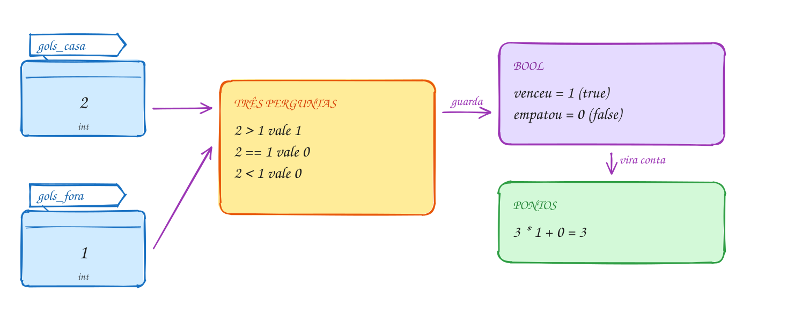
#include <stdbool.h>
#include <stdio.h>
int main(void) {
int gols_casa = 2;
int gols_fora = 1;
printf("casa > fora? %d\n", gols_casa > gols_fora);
printf("casa == fora? %d\n", gols_casa == gols_fora);
printf("casa < fora? %d\n", gols_casa < gols_fora);
bool venceu = gols_casa > gols_fora; // guarda a resposta: true
bool empatou = gols_casa == gols_fora; // false
int pontos = 3 * venceu + empatou; // 3 * 1 + 0
printf("Pontos do mandante: %d\n", pontos);
return 0;
}
// Saída:
// casa > fora? 1
// casa == fora? 0
// casa < fora? 0
// Pontos do mandante: 3
O fluxograma não tem losango: comparar só calcula uma resposta e a guarda.
Quem escolhe o caminho é o if (0014):
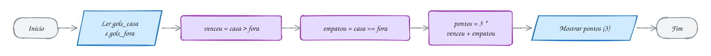
Exemplo A023 · A nota no limite e a contagem sem if
#include <stdbool.h>
#include <stdio.h>
int main(void) {
double nota_ana = 7.0; // bem no limite da média
double nota_bia = 6.9;
double nota_caio = 8.5;
// > e >= só discordam num caso: quando os dois lados são iguais
printf("7.0 > 7? %d\n", nota_ana > 7);
printf("7.0 >= 7? %d\n", nota_ana >= 7);
bool ana = nota_ana >= 7;
bool bia = nota_bia >= 7;
bool caio = nota_caio >= 7;
// cada bool vale 0 ou 1: somar conta quantos passaram
int aprovados = ana + bia + caio;
printf("Aprovados: %d de 3\n", aprovados);
printf("Todos passaram? %d\n", aprovados == 3);
printf("Alguém ficou de fora? %d\n", aprovados != 3);
return 0;
}
// Saída:
// 7.0 > 7? 0
// 7.0 >= 7? 1
// Aprovados: 2 de 3
// Todos passaram? 0
// Alguém ficou de fora? 1
gcc ~/LPEDC/material/A023.c -o ~/LPEDC/material/A023 && ~/LPEDC/material/A023
Exemplo A024 · Zero é falso, o resto é verdade
#include <math.h>
#include <stdbool.h>
#include <stdio.h>
int main(void) {
int saldo = 250;
bool tem_saldo = saldo; // 250 não é zero: vira true (1)
bool zerado = 0; // só o zero é falso
bool negativo = -3; // negativo também é verdade
printf("tem_saldo = %d\n", tem_saldo);
printf("zerado = %d\n", zerado);
printf("negativo = %d\n", negativo);
printf("sizeof(bool) = %zu byte\n", sizeof(bool));
// char também é número: 'A' vale 65 e 'a' vale 97
printf("'A' < 'a'? %d\n", 'A' < 'a');
// número com vírgula: nunca compare com ==
double soma = 0.1 + 0.2;
printf("0.1 + 0.2 == 0.3? %d\n", soma == 0.3);
printf("perto o bastante? %d\n", fabs(soma - 0.3) < 1e-9);
return 0;
}
// Saída:
// tem_saldo = 1
// zerado = 0
// negativo = 1
// sizeof(bool) = 1 byte
// 'A' < 'a'? 1
// 0.1 + 0.2 == 0.3? 0
// perto o bastante? 1
gcc ~/LPEDC/material/A024.c -o ~/LPEDC/material/A024 -lm && ~/LPEDC/material/A024
Exercício E067 · ★☆☆
No posto, a regra de bolso diz que o etanol compensa quando custa no máximo 70% do preço da gasolina. Leia o preço do etanol e o da gasolina, nessa ordem e sem mostrar perguntas, e guarde a resposta num bool. Mostre o bool com %d (sem if: só a comparação).
Entrada:
4.19
6.09
Saída esperada:
Etanol compensa? 1
Exercício E069 · ★★☆
A loja cobra frete de R$ 24.90, mas só quando a compra é menor que R$ 199.00. Leia o total da compra, sem mostrar pergunta, e calcule o frete SEM usar if: multiplique 24.90 pelo 0 ou 1 de uma comparação. Mostre o frete e o valor a pagar.
Entrada:
150
Saída esperada:
Frete: R$ 24.90
A pagar: R$ 174.90
Exercício E070 · ★★☆
A bala custa R$ 0,70 e a criança pagou com sete moedas de 10 centavos. Escreva um programa com preco = 0.7 e pago = 0.1 * 7 (double). Mostre pago com 20 casas e responda "Pagou o valor exato?" de dois jeitos: (a) comparando os doubles com uma tolerância de 1e-9, usando fabs; (b) trabalhando com centavos em int (70 e 7 * 10).
Saída esperada:
pago = 0.70000000000000006661
Pagou o valor exato? 1
Pagou o valor exato? 1
gcc ~/LPEDC/material/E070.c -o ~/LPEDC/material/E070 -lm && ~/LPEDC/material/E070
Exercício E072 · ★★★
Desconto progressivo, sem nenhum if: compras a partir de R$ 100 ganham 5%; a partir de R$ 300, ganham mais 5% (10% no total). Leia o total, sem mostrar pergunta, calcule a porcentagem só com comparações e mostre o total, o desconto e o valor a pagar.
Entrada:
150
Saída esperada:
Total: R$ 150.00
Desconto: 5%
A pagar: R$ 142.50
Uma comparação sozinha responde uma pergunta. Muitas regras da vida real dependem de várias ao mesmo tempo: pode dirigir quem tem 18 anos e tem carteira; ganha frete grátis quem é assinante ou comprou acima de R$ 100. Para juntar comparações numa resposta só, o C tem os operadores lógicos.
Pense na bilheteria do cinema. Paga meia quem é estudante ou tem 60 anos ou mais, e a sessão não é pré-estreia. São três respostas de sim ou não, ligadas pelas palavras E, OU e NÃO. A atendente não pensa nessas palavras, mas aplica cada uma delas toda vez que vende um ingresso.
Os operadores lógicos do C são esses três (DEITEL; DEITEL, 2011, cap.
4). O E, escrito a && b, é verdade só quando as duas partes são
verdade. O OU, a || b, é verdade quando pelo menos uma parte é
verdade. O NÃO, !a, inverte: !1 vale 0 e !0 vale 1. Como nas
comparações do 0012, o resultado é um int que vale 0 ou 1.
A tabela-verdade reúne todas as combinações possíveis de a e b e o
resultado de cada operador. Vale a pena conferir uma linha de cada vez:
com a falso e b verdadeiro, o E dá 0, porque falta uma parte, e o OU dá
1, porque uma basta.
a |
b |
a && b |
a || b |
!a |
|---|---|---|---|---|
| 0 | 0 | 0 | 0 | 1 |
| 0 | 1 | 0 | 1 | 1 |
| 1 | 0 | 0 | 1 | 0 |
| 1 | 1 | 1 | 1 | 0 |
O uso mais comum do E é o intervalo. Na matemática você escreve
18 ≤ idade ≤ 65; no C, o intervalo é um E de duas comparações:
idade >= 18 && idade <= 65 (BACKES, 2013, cap. 3). Escrever
18 <= idade <= 65 compila, mas faz outra coisa: compara o 0 ou 1 da
primeira parte com 65, que é sempre menor. Com idade 67, o resultado é 1.
Quando a expressão mistura vários operadores, vale a precedência, da
mais forte para a mais fraca: o ! (junto com o menos de -x), os
aritméticos, os relacionais (<, >, <=, >=), a igualdade (==,
!=), o && e, por último, o || (KERNIGHAN; RITCHIE, 1988, cap. 2).
Por isso x > 0 && x < 10 dispensa parênteses: as comparações acontecem
antes do E. E a || b && c é lido como a || (b && c). Na dúvida, ponha
parênteses; eles também mostram a intenção para quem lê.
O C avalia && e || da esquerda para a direita e para assim que sabe a
resposta. Isso se chama curto-circuito, e o padrão garante esse
comportamento (DEITEL; DEITEL, 2011, cap. 4). Em a && b, se a é falso,
o resultado já é falso e o b nem é calculado. Em a || b, se a é
verdade, o resultado já é verdade e o b é pulado. Isso protege contas
perigosas: em n != 0 && total / n > 3, a divisão só acontece quando n
não é zero. Também economiza trabalho; ponha à esquerda o teste mais barato
ou o que mais dá falso.
Às vezes você precisa negar uma condição inteira. As leis de De Morgan
dizem como: o NÃO entra nos parênteses e troca E por OU. !(a && b) é o
mesmo que !a || !b, e !(a || b) é o mesmo que !a && !b (DEITEL;
DEITEL, 2011, cap. 4). Em palavras: "não é (estudante ou idoso)" é "não é
estudante e não é idoso". A troca do E pelo OU é o ponto que mais se
esquece.
[!WARNING]
&não é&&. O&é o E bit a bit (0065): sem curto-circuito e com precedência menor que a do==.if (x & 1 == 0)virax & (1 == 0), sempre 0. O certo é(x & 1) == 0oux % 2 == 0. O-Wallavisa: "suggest parentheses".
No cinema, paga meia quem é estudante ou tem 60 anos ou mais, e a sessão não é pré-estreia. Para uma pessoa de 67 anos, não estudante, numa sessão comum, o OU dá verdade pela idade, o NÃO dá verdade e o E fecha com meia-entrada:
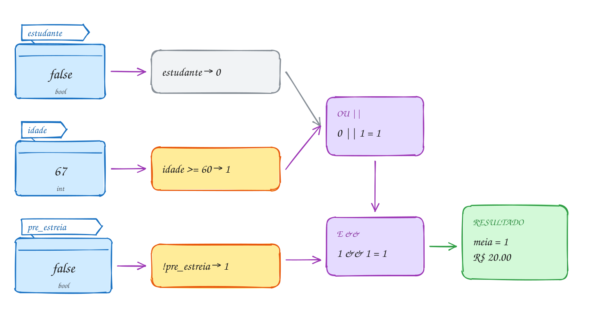
#include <stdbool.h>
#include <stdio.h>
int main(void) {
int idade = 67;
bool estudante = false;
bool pre_estreia = false;
// os parênteses são obrigatórios aqui: && vem antes de ||
bool meia = (estudante || idade >= 60) && !pre_estreia;
printf("Meia-entrada? %d\n", meia);
printf("Ingresso: R$ %.2f\n", 40.0 - meia * 20.0);
return 0;
}
// Saída:
// Meia-entrada? 1
// Ingresso: R$ 20.00
O C pergunta uma coisa de cada vez: como estudante é falso, olha a idade; se
fosse verdade, pularia direto para a pré-estreia. É o curto-circuito
desenhado:
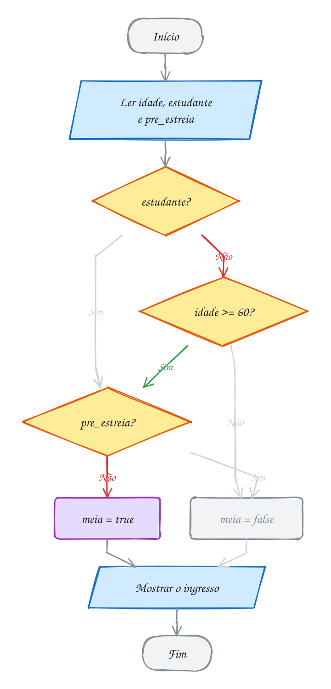
Exemplo A025 · Dentro, fora e "só um dos dois"
#include <stdbool.h>
#include <stdio.h>
int main(void) {
int hora = 22;
// dentro da faixa: um E de duas comparações
bool comercial = hora >= 8 && hora < 18;
// fora da faixa: um OU. É o NÃO do de cima, aberto por De Morgan:
// !(hora >= 8 && hora < 18) vira hora < 8 || hora >= 18
bool fora = hora < 8 || hora >= 18;
printf("Horário comercial? %d\n", comercial);
printf("Fora do horário? %d\n", fora);
// o C não tem um "OU exclusivo" lógico, mas com bool o != faz o papel:
// verdade quando exatamente um dos dois é verdade
bool cupom = true;
bool primeira_compra = true;
bool um_desconto_so = cupom != primeira_compra;
bool algum_desconto = cupom || primeira_compra;
printf("Algum desconto? %d\n", algum_desconto);
printf("Só um desconto? %d\n", um_desconto_so);
return 0;
}
// Saída:
// Horário comercial? 0
// Fora do horário? 1
// Algum desconto? 1
// Só um desconto? 0
gcc ~/LPEDC/material/A025.c -o ~/LPEDC/material/A025 && ~/LPEDC/material/A025
Exemplo A026 · O curto-circuito protege a divisão
#include <stdbool.h>
#include <stdio.h>
int main(void) {
int fatias = 24;
int convidados = 0; // ninguém confirmou ainda
// convidados != 0 deu falso: o && para ali e a divisão nem acontece
bool sobra = convidados != 0 && fatias / convidados > 3;
printf("Sobra pizza? %d\n", sobra);
// o lado direito do || só roda se o esquerdo for falso
int chamadas = 0;
bool muita = fatias > 10 || ++chamadas > 0;
printf("muita = %d, chamadas = %d\n", muita, chamadas);
// De Morgan: !(a || b) é o mesmo que !a && !b
bool chovendo = false;
bool frio = true;
printf("!(chovendo || frio) = %d\n", !(chovendo || frio));
printf("!chovendo && !frio = %d\n", !chovendo && !frio);
return 0;
}
// Saída:
// Sobra pizza? 0
// muita = 1, chamadas = 0
// !(chovendo || frio) = 0
// !chovendo && !frio = 0
gcc ~/LPEDC/material/A026.c -o ~/LPEDC/material/A026 && ~/LPEDC/material/A026
Exercício E073 · ★☆☆
Monte a tabela-verdade no terminal. Para cada uma das quatro combinações de a e b (0 0, 0 1, 1 0, 1 1), dê os valores às duas variáveis e mostre uma linha com a, b, a && b, a || b e !a, calculados pelo programa (nada de digitar os resultados no printf). Primeiro vem a linha de títulos.
Saída esperada:
a b | E OU NAO
0 0 | 0 0 1
0 1 | 0 1 1
1 0 | 0 1 0
1 1 | 1 1 0
Exercício E075 · ★★☆
Um ano é bissexto quando é divisível por 4 e não por 100, ou quando é divisível por 400. Leia o ano, sem mostrar pergunta, e calcule a resposta numa ÚNICA expressão, guardada num bool (sem if). Mostre o bool com %d.
Entrada:
2024
Saída esperada:
Bissexto? 1
Exercício E076 · ★★☆
Na portaria do show, a regra do "barrado" é !(idade >= 18 && tem_ingresso). Leia a idade e depois 1 ou 0 para "tem ingresso", sem mostrar perguntas. Calcule o barrado de duas formas: a original e uma reescrita por De Morgan, sem o ! do lado de fora de parênteses. Mostre as duas lado a lado.
Entrada:
16
1
Saída esperada:
barrado (original): 1
barrado (De Morgan): 1
Exercício E077 · ★★★
O app do banco mostra se o gasto médio por dia passou de R$ 100. Leia o gasto total e o número de dias (dois inteiros, em um scanf), sem mostrar pergunta. gasto_alto é verdade quando a média (gasto / dias) passa de 100; alerta é verdade quando não há dias registrados OU quando o gasto é alto. Conta nova tem 0 dias: o programa não pode dividir por zero em nenhuma das duas linhas. Sem if. Teste com 900 6 e com 900 0.
Entrada:
900 6
Saída esperada:
Gasto alto? 1
Alerta? 1
Entrada:
900 0
Saída esperada:
Gasto alto? 0
Alerta? 1
Com as comparações (0012) e os operadores lógicos (0013), o programa já
sabe fazer perguntas e calcular a resposta, mas ainda não sabe agir
diferente conforme ela. Todo programa até aqui executava as mesmas linhas,
sempre. O if é o primeiro comando que muda o caminho: ele deixa um trecho
rodar só quando uma condição é verdadeira.
Pense no caixa do mercado com a placa: compras a partir de R$ 200 ganham 10% de desconto. A operadora soma tudo e olha o total. Se passou de R$ 200, ela faz um passo a mais e aplica o desconto. Se não passou, não faz nada de especial e segue para o pagamento. O passo extra depende da resposta; o resto acontece de qualquer jeito.
Esse "só se" é o if, a seleção simples. Quando a condição é
verdadeira, o programa executa o bloco do if; quando é falsa, pula o
bloco inteiro e continua na linha seguinte. É um passo extra ou nada
(DEITEL; DEITEL, 2011, cap. 3). Não há "senão" aqui; ele chega no 0015.
if (condição) {
// só roda quando a condição é verdadeira
}
// daqui em diante roda sempre
A condição vem entre parênteses e pode ser qualquer expressão que dê um
número. Pode ser uma comparação, como total >= 200; uma combinação lógica,
como idade >= 18 && tem_cnh; ou uma variável sozinha. Vale a regra do
0012: zero é falso, o resto é verdade (BACKES, 2013, cap. 4). Assim,
if (saldo) equivale a if (saldo != 0), e if (!saldo) equivale a
if (saldo == 0). As duas formas funcionam; a segunda deixa a pergunta
mais explícita.
O bloco é o trecho entre chaves, e ele aceita quantas instruções você
quiser. Tudo o que está entre a { e a } roda junto, ou nada roda. Sem
chaves, o if controla uma instrução só: a primeira que vem depois
dele (BACKES, 2013, cap. 4). A linha seguinte já está fora do if, mesmo
que pareça dentro.
if (total >= 200)
total = total * 0.9; // depende do if
printf("Pronto\n"); // NÃO depende, apesar de qualquer recuo
O que engana é o recuo, os espaços no começo da linha. Ele existe só
para quem lê; o compilador o ignora por completo. Se você acrescentar uma
segunda linha recuada debaixo de um if sem chaves, ela parece fazer parte
do if, mas roda sempre. Por isso o curso usa chaves sempre, mesmo
quando o bloco tem uma linha só (KERNIGHAN; RITCHIE, 1988, cap. 3). Com as
chaves, acrescentar uma linha depois não muda o sentido do código.
Um último detalhe sobre a condição: ela é avaliada uma vez, no momento em
que o programa chega ao if. Se total mudar depois, o if não volta
atrás. No exemplo do mercado, o desconto multiplica o total por 0,9 dentro
do bloco, e a linha que mostra o valor final, fora do bloco, enxerga o
total já atualizado ou o original, conforme o caminho tomado.
[!WARNING] O
;depois doifmata a condição. Emif (total >= 200);, o;é uma instrução vazia e vira o corpo; o bloco seguinte roda sempre, e todo mundo ganha desconto. O-Wextraavisa ("suggest braces around empty body"). No fim da linha doifnunca vai;.
No mercado, compras a partir de R$ 200 ganham 10% de desconto. Entram
R$ 230, a resposta é Sim e o valor final é R$ 207; com Não, a seta cinza iria
direto ao final (%% mostra um % no printf):
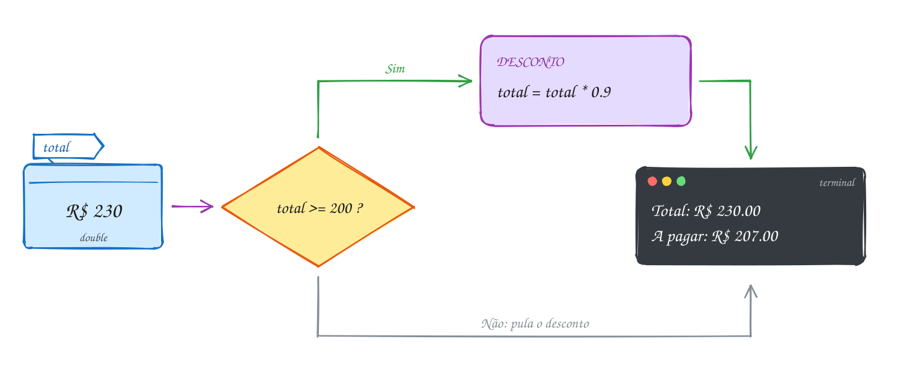
#include <stdio.h>
int main(void) {
double total = 230.0;
printf("Total: R$ %.2f\n", total);
if (total >= 200) {
total = total * 0.9; // 10% de desconto
printf("Desconto de 10%% aplicado!\n");
}
printf("A pagar: R$ %.2f\n", total);
return 0;
}
// Saída:
// Total: R$ 230.00
// Desconto de 10% aplicado!
// A pagar: R$ 207.00
A saída Não do losango não faz nada: vai direto ao "Mostrar", onde o Sim chega depois do desconto:
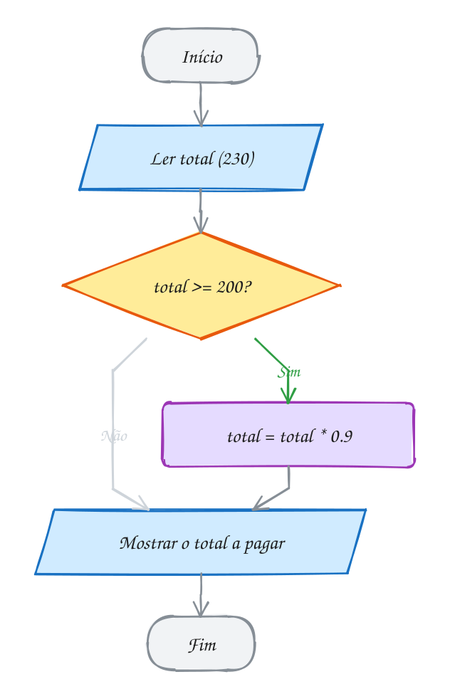
Exemplo A027 · Avisos independentes no painel do carro
#include <stdbool.h>
#include <stdio.h>
// Três if seguidos, sem else: cada pergunta é feita, não importa o que as
// outras responderam. Pode acender nenhum aviso, um, dois ou os três.
int main(void) {
int combustivel = 12; // porcentagem do tanque
bool porta_aberta = true;
int km_revisao = 0; // quilômetros até a próxima revisão
if (combustivel < 15) {
printf("Aviso: tanque na reserva (%d%%).\n", combustivel);
}
if (porta_aberta) { // a variável sozinha: verdade se não for zero
printf("Aviso: porta aberta.\n");
}
if (!km_revisao) { // o mesmo que km_revisao == 0
printf("Aviso: hora da revisão.\n");
}
printf("Boa viagem!\n");
return 0;
}
// Saída:
// Aviso: tanque na reserva (12%).
// Aviso: porta aberta.
// Aviso: hora da revisão.
// Boa viagem!
gcc ~/LPEDC/material/A027.c -o ~/LPEDC/material/A027 && ~/LPEDC/material/A027
Exemplo A028 · Dois preços em ordem
#include <stdio.h>
// Um if com um bloco de três instruções: a troca só acontece se precisar.
int main(void) {
double preco1, preco2;
printf("Dois preços: ");
if (scanf("%lf %lf", &preco1, &preco2) != 2) { // leu os dois números?
printf("Entrada inválida\n");
return 1;
}
if (preco1 > preco2) {
double aux = preco1; // guarda o primeiro antes de perder
preco1 = preco2;
preco2 = aux;
}
printf("Mais barato: R$ %.2f\n", preco1);
printf("Mais caro: R$ %.2f\n", preco2);
return 0;
}
// Dois preços: 12.90 8.50
// Mais barato: R$ 8.50
// Mais caro: R$ 12.90
gcc ~/LPEDC/material/A028.c -o ~/LPEDC/material/A028 && ~/LPEDC/material/A028
Exercício E079 · ★☆☆
Leia a temperatura de uma pessoa, sem mostrar pergunta, e mostre sempre o valor lido. Só se ela passar de 37.5, mostre também o aviso de febre.
Entrada:
38.2
Saída esperada:
Temperatura: 38.2 °C
Febre! Procure um médico.
Exercício E081 · ★★☆
O cinema barra menores de 18 anos neste filme. Leia a idade, sem mostrar pergunta. Se for menor que 18, mostre "Entrada proibida para menores.". Para todo mundo, mostre "Bom filme!" no final. Teste com 25 e com 15.
Entrada:
25
Saída esperada:
Bom filme!
Entrada:
15
Saída esperada:
Entrada proibida para menores.
Bom filme!
Exercício E082 · ★★☆
Três lojas deram orçamento para a mesma geladeira. Leia os três valores (inteiros, em reais, na mesma linha) e mostre o MAIOR, usando só if (sem else).
Entrada:
3200 3790 3450
Saída esperada:
Maior orçamento: R$ 3790
Exercício E084 · ★★★
A conta de água da cidade funciona assim: até 10 m³, paga a tarifa mínima de R$ 45.00. Cada m³ acima de 10 custa R$ 6.20. E, se o consumo passar de 30 m³, a conta inteira ganha 15% de multa por desperdício. Leia o consumo (inteiro), sem mostrar pergunta, e mostre a conta. Use só if, sem else.
Entrada:
18
Saída esperada:
Conta: R$ 94.60
O if do 0014 fazia um passo a mais ou nada. Muitas situações, porém, têm
dois desfechos, e um deles sempre acontece: o aluno passa ou fica de
recuperação, o pagamento é aprovado ou recusado. Com um if só, você teria
de escrever a pergunta duas vezes, uma afirmando e outra negando. O C
oferece um jeito direto de dizer "se não, faça isto".
Pense na catraca do metrô. Você encosta o cartão, e ela faz uma pergunta: há saldo para a tarifa de R$ 5,00? Se há, ela libera a passagem e desconta. Se não há, ela barra e mostra quanto falta. Não existe terceira saída, e as duas nunca acontecem juntas.
Esse segundo caminho é o else, "senão" em inglês. Junto com o if,
ele forma a seleção dupla: exatamente um dos dois blocos roda, nunca os
dois e nunca nenhum (DEITEL; DEITEL, 2011, cap. 3). Com a condição
verdadeira, roda o bloco do if; com ela falsa, roda o bloco do else.
Depois, os dois caminhos se reencontram na linha seguinte.
if (condição) {
// caminho do Sim
} else {
// caminho do Não
}
O else não tem condição. Ele significa "todo o resto", tudo o que não
satisfez o if. Por isso else (saldo < 5) é erro de compilação: se você
precisa de outra pergunta, ela vira um novo if, assunto do 0016 (BACKES,
2013, cap. 4).
As regras de chaves do 0014 continuam valendo. Sem chaves, o else
controla uma instrução só, e o curso usa chaves sempre. O ; depois do
if, que no 0014 compilava e errava em silêncio, agora costuma ser pego:
em if (c); { ... } else { ... }, o ; encerra o if, o bloco fica solto
e o else aparece sem nenhum if antes dele. O compilador recusa (DEITEL;
DEITEL, 2011, cap. 3).
Agora a pegadinha mais famosa do C, que o compilador não recusa: o =
no lugar do ==. Ela funciona assim. No 0009 você viu que a atribuição é
uma expressão e vale o valor que acabou de guardar. Então if (saldo = 0)
não compara nada: ele guarda 0 em saldo e depois testa esse 0, que é
falso (DEITEL; DEITEL, 2011, cap. 4). O saldo some e o else roda sempre.
Do mesmo jeito, if (opcao = 1) guarda 1 e é sempre verdade, qualquer que
fosse a opção digitada.
Na execução, nada denuncia o erro; o único alerta vem do compilador.
Com -Wall, o gcc acusa "suggest parentheses around assignment
used as truth value" na linha do if (GNU, s.d.). Trate todo aviso como
erro: código bom compila com zero avisos. Há também um truque de escrita:
pôr a constante à esquerda, if (0 == saldo). Se faltar um =, a linha
vira 0 = saldo, que não compila, porque 0 não é um lugar da memória.
[!WARNING]
=no lugar de==compila e erra em silêncio: comif (saldo = 0), o saldo vira zero e oelseroda sempre. Compile com-Wallou escreva a constante à esquerda:0 = saldonão compila.
Na catraca do metrô, o cartão tem R$ 3,50 e a tarifa é R$ 5,00. A resposta é Não, e o caminho de baixo é o que vale:
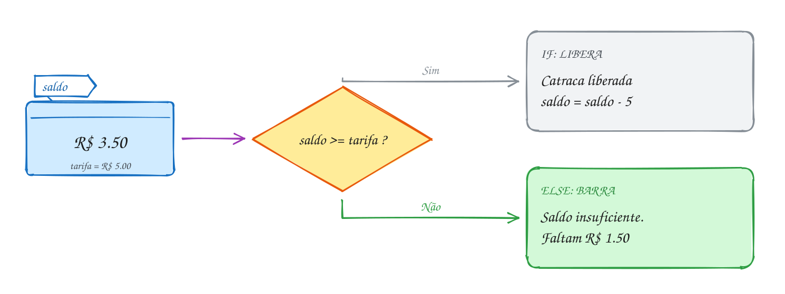
#include <stdio.h>
int main(void) {
double saldo = 3.50;
double tarifa = 5.00;
if (saldo >= tarifa) {
saldo = saldo - tarifa;
printf("Catraca liberada. Saldo: R$ %.2f\n", saldo);
} else {
printf("Saldo insuficiente.\n");
printf("Faltam R$ %.2f\n", tarifa - saldo);
}
return 0;
}
// Saída:
// Saldo insuficiente.
// Faltam R$ 1.50
Cada lado do losango tem seu bloco, e os dois se reencontram no Fim:
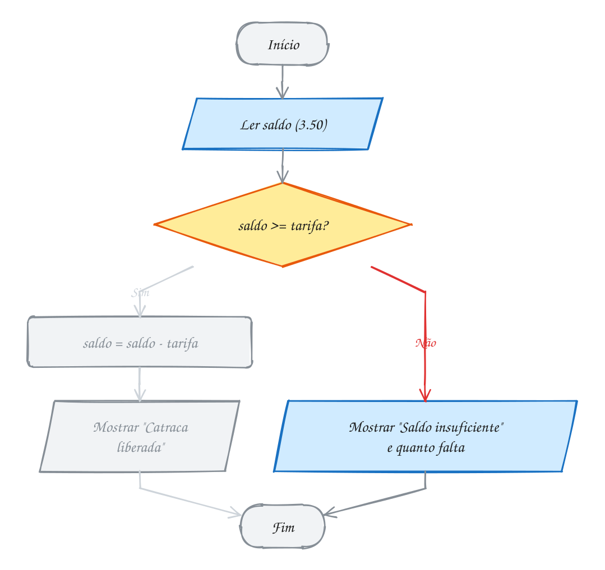
Exemplo A029 · O estacionamento e a constante à esquerda
#include <stdio.h>
int main(void) {
int horas = 5;
int vagas_livres = 0;
double valor;
// os dois caminhos guardam o resultado na mesma variável
if (horas <= 3) {
valor = 12.0; // preço fechado até 3 horas
} else {
valor = 12.0 + (horas - 3) * 4.0; // R$ 4 por hora a mais
}
printf("%d horas: R$ %.2f\n", horas, valor); // roda depois de qualquer lado
// constante à esquerda: se esquecer um =, "0 = vagas_livres" nem compila
if (0 == vagas_livres) {
printf("Placa na entrada: LOTADO\n");
} else {
printf("Placa na entrada: %d vagas\n", vagas_livres);
}
return 0;
}
// Saída:
// 5 horas: R$ 20.00
// Placa na entrada: LOTADO
gcc ~/LPEDC/material/A029.c -o ~/LPEDC/material/A029 && ~/LPEDC/material/A029
Exemplo A030 · Par ou ímpar no palitinho
#include <stdio.h>
int main(void) {
int dedos_ana = 3; // Ana pediu par
int dedos_beto = 4; // Beto pediu ímpar
int soma = dedos_ana + dedos_beto;
printf("Soma: %d\n", soma);
if (soma % 2 == 0) { // resto 0 na divisão por 2: par
printf("Deu par. Ana ganhou!\n");
} else { // sem condição: é todo o resto
printf("Deu ímpar. Beto ganhou!\n");
}
return 0;
}
// Saída:
// Soma: 7
// Deu ímpar. Beto ganhou!
gcc ~/LPEDC/material/A030.c -o ~/LPEDC/material/A030 && ~/LPEDC/material/A030
Exercício E085 · ★☆☆
Leia a idade, sem mostrar pergunta. Se for 18 ou mais, mostre "Maior de idade."; senão, mostre quantos anos faltam para os 18.
Entrada:
16
Saída esperada:
Faltam 2 ano(s) para a maioridade.
Exercício E087 · ★★☆
O caixa eletrônico bloqueia o cartão na 3ª senha errada. Leia quantas senhas erradas já foram digitadas, sem mostrar pergunta. Se forem 3, mostre "Cartão bloqueado."; senão, mostre quantas tentativas restam (3 menos o valor lido). No fim, para qualquer caso, mostre quantas tentativas foram registradas. Teste com 1 e com 3.
Entrada:
1
Saída esperada:
Senha errada. Restam 2 tentativa(s).
Tentativas registradas: 1
Entrada:
3
Saída esperada:
Cartão bloqueado.
Tentativas registradas: 3
Exercício E088 · ★★☆
No empréstimo consignado, a parcela não pode passar de 35% do salário. Leia o salário e o valor da parcela, nessa ordem e sem mostrar perguntas. Mostre o limite e se o empréstimo foi aprovado ("Aprovado!") ou negado.
Entrada:
3000
1200
Saída esperada:
Limite da parcela: R$ 1050.00
Negado: a parcela passa do limite.
Exercício E090 · ★★★
Bhaskara. Leia os coeficientes a, b e c de ax² + bx + c = 0 (suponha a diferente de zero), sem mostrar pergunta. Calcule delta = b² - 4ac. Se delta for negativo, mostre "Sem raízes reais."; senão, calcule e mostre as duas raízes com duas casas (x1 com a raiz do delta somada, x2 subtraída).
Entrada:
1 -5 6
Saída esperada:
x1 = 3.00
x2 = 2.00
gcc ~/LPEDC/material/E090.c -o ~/LPEDC/material/E090 -lm && ~/LPEDC/material/E090
O if/else do 0015 escolhe entre dois caminhos. Muita regra, porém, tem
mais de duas saídas: uma nota vira conceito A, B, C ou D; uma conta de luz
cai numa de várias faixas de tarifa. Você precisa de um jeito de fazer
várias perguntas em sequência e ficar com a primeira que der certo.
Pense no radar de uma avenida com limite de 60 km/h. O Código de Trânsito divide o excesso em faixas: até 20% acima do limite, infração média; de 20% a 50% acima, grave; acima de 50%, gravíssima. Com o limite de 60, as faixas terminam em 72 e 90 km/h. O agente olha a velocidade e procura a primeira faixa em que ela cabe, começando pela menor. Quatro caminhos, e só um vale.
Para isso, o C encadeia perguntas com else if: cada else traz uma
nova pergunta, e só um bloco da cadeia roda (DEITEL; DEITEL, 2011, cap. 3).
if (velocidade <= 60) {
// dentro do limite
} else if (velocidade <= 72) {
// média
} else if (velocidade <= 90) {
// grave
} else {
// gravíssima
}
O C testa as condições de cima para baixo e para no primeiro Sim:
roda aquele bloco e pula todo o resto da cadeia, sem fazer os testes que
faltam (BACKES, 2013, cap. 4). Isso tem uma consequência útil. Quando o
programa chega em velocidade <= 72, já se sabe que a velocidade passou
de 60, senão ele teria parado no primeiro teste. Por isso não é preciso
escrever velocidade > 60 && velocidade <= 72: a parte de baixo da faixa
já está garantida pelos testes anteriores. Com 80 km/h, o C pergunta
"80 <= 60?", não; "80 <= 72?", não; "80 <= 90?", sim, e para ali.
A mesma regra faz a ordem importar. Se o primeiro teste fosse
velocidade <= 90, os 65 km/h cairiam nele e virariam "grave", porque 65
também é menor que 90. Percorra as faixas sempre num sentido só, da menor
para a maior ou o contrário (DEITEL; DEITEL, 2011, cap. 3). O else final
é opcional e pega o que sobrou, o caso em que nenhuma pergunta deu Sim.
O else if é um caso particular de algo mais geral: o if aninhado,
um if dentro do bloco de outro if. Ele serve quando a segunda pergunta
só faz sentido depois de um Sim na primeira: "o usuário existe? Se existe,
a senha confere?". Não adianta conferir a senha de quem não existe. E o
else if nem é uma palavra-chave do C. Ele é um else cuja única
instrução é um if, escrito na mesma linha para evitar uma escada de
recuos (KERNIGHAN; RITCHIE, 1988, cap. 3).
Quando há if dentro de if sem chaves, surge uma dúvida: a qual if
pertence um else? A regra do C é fixa e não olha para o recuo. Um else
pertence ao if mais próximo, acima dele, que ainda não tem else
(BACKES, 2013, cap. 4). Esse caso tem nome: o else pendurado. Com
chaves em volta do if de dentro, a dúvida desaparece, porque o bloco
fecha antes do else.
[!WARNING] O
elsependurado. O recuo engana:if (pessoas > 0) if (pessoas == 1) printf("Mesa para um.\n"); else printf("Restaurante vazio.\n");O
elseé do segundoif: com 4 pessoas aparece "Restaurante vazio.". O-Wallavisa; a cura são chaves em volta doifde dentro.
O radar da avenida tem limite de 60 km/h e você passou a 80. As faixas saem do limite: 80 <= 60? Não. <= 72? Não. <= 90? Sim, e a busca para ali:
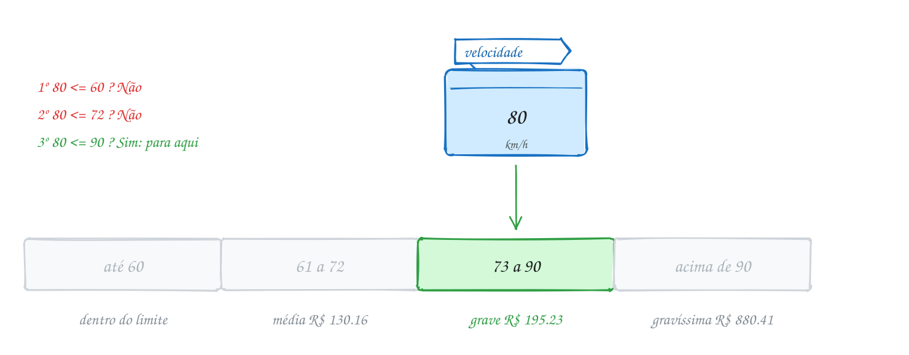
#include <stdio.h>
int main(void) {
int limite = 60;
int velocidade = 80;
int faixa_media = limite + limite / 5; // 72: até 20% acima
int faixa_grave = limite + limite / 2; // 90: até 50% acima
if (velocidade <= limite) {
printf("Dentro do limite. Boa viagem!\n");
} else if (velocidade <= faixa_media) {
printf("Infração média: R$ 130.16\n");
} else if (velocidade <= faixa_grave) {
printf("Infração grave: R$ 195.23\n");
} else {
printf("Infração gravíssima: R$ 880.41\n");
}
return 0;
}
// Saída:
// Infração grave: R$ 195.23
O fluxograma é uma escada de losangos, cada um no Não do anterior; os de baixo do primeiro Sim não são visitados:
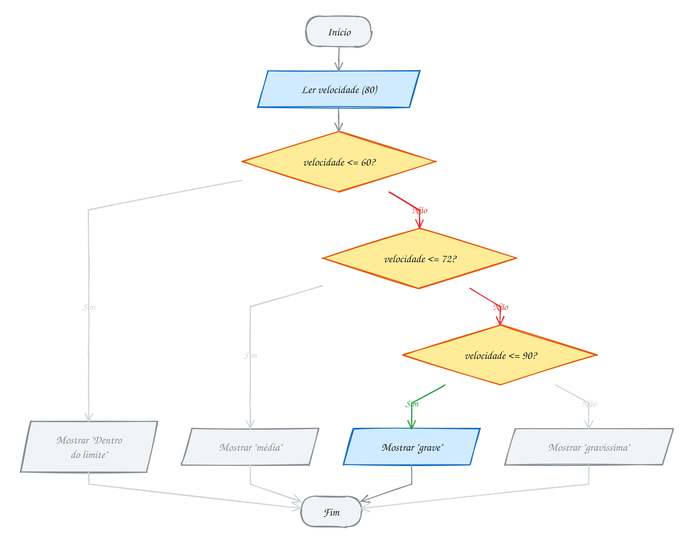
Exemplo A031 · FizzBuzz e a ordem que importa
#include <stdio.h>
// Aqui as condições não são faixas: um número pode cumprir várias ao mesmo
// tempo. Como o else if para no primeiro Sim, a mais exigente vem primeiro.
int main(void) {
int n = 15; // divisível por 3 e por 5
printf("Ordem certa: ");
if (n % 3 == 0 && n % 5 == 0) {
printf("FizzBuzz\n");
} else if (n % 3 == 0) {
printf("Fizz\n");
} else if (n % 5 == 0) {
printf("Buzz\n");
} else {
printf("%d\n", n);
}
printf("Ordem errada: ");
if (n % 3 == 0) { // 15 já para aqui: o FizzBuzz nunca é testado
printf("Fizz\n");
} else if (n % 5 == 0) {
printf("Buzz\n");
} else if (n % 3 == 0 && n % 5 == 0) {
printf("FizzBuzz\n");
} else {
printf("%d\n", n);
}
return 0;
}
// Saída:
// Ordem certa: FizzBuzz
// Ordem errada: Fizz
gcc ~/LPEDC/material/A031.c -o ~/LPEDC/material/A031 && ~/LPEDC/material/A031
Exemplo A032 · Login com if aninhado
#include <stdbool.h>
#include <stdio.h>
// A pergunta da senha só faz sentido se o usuário existir: um if dentro do
// outro. As chaves deixam claro de qual if é cada else.
int main(void) {
bool usuario_existe = true;
int senha_certa = 4821;
int senha_digitada = 4812; // dois dígitos trocados
if (usuario_existe) {
if (senha_digitada == senha_certa) {
printf("Bem-vindo!\n");
} else {
printf("Senha errada.\n");
}
} else {
printf("Usuário não encontrado.\n");
}
return 0;
}
// Saída:
// Senha errada.
gcc ~/LPEDC/material/A032.c -o ~/LPEDC/material/A032 && ~/LPEDC/material/A032
Exercício E091 · ★☆☆
O plano de saúde cobra por faixa de idade: até 18 anos, R$ 150; de 19 a 38, R$ 280; de 39 a 58, R$ 520; de 59 em diante, R$ 900. Leia a idade, sem mostrar pergunta, e mostre a mensalidade usando uma cadeia de else if.
Entrada:
45
Saída esperada:
Mensalidade: R$ 520.00
Exercício E093 · ★★☆
O assistente do celular lê duas respostas, cada uma 1 ou 0: você vai sair? Vai chover? Quem vai sair e vê chuva lê "Leve o guarda-chuva."; quem NÃO vai sair lê "Fique em casa e descanse."; quem vai sair sem chuva não lê nenhum dos dois. Todo mundo lê "Bom dia!" no fim. Leia as duas respostas em um scanf, sem mostrar pergunta, e use chaves em todos os blocos. Teste com 0 1, 1 0 e 1 1.
Entrada:
0 1
Saída esperada:
Fique em casa e descanse.
Bom dia!
Entrada:
1 0
Saída esperada:
Bom dia!
Entrada:
1 1
Saída esperada:
Leve o guarda-chuva.
Bom dia!
Exercício E094 · ★★☆
Leia a nota (real), sem mostrar pergunta, e mostre o conceito: A para 9 ou mais, B para 7 ou mais, C para 5 ou mais, D para abaixo de 5. Use uma cadeia de else if. Teste com 9.5, 7.2, 5 e 3.
Entrada:
9.5
Saída esperada:
Conceito A
Entrada:
7.2
Saída esperada:
Conceito B
Entrada:
5
Saída esperada:
Conceito C
Entrada:
3
Saída esperada:
Conceito D
Exercício E095 · ★★★
Leia três medidas inteiras (em cm), na mesma linha. Primeiro diga se elas formam um triângulo: cada lado tem que ser menor que a soma dos outros dois ("Não forma triângulo." se não). Se formarem, classifique: equilátero (3 lados iguais), isósceles (só 2 iguais) ou escaleno (todos diferentes).
Entrada:
5 5 8
Saída esperada:
Triângulo isósceles.
Muitas decisões servem só para escolher um valor. O frete é zero ou
R$ 19,90; a palavra é "item" ou "itens"; a nota mínima é 5 ou 6. Com
if/else, cada escolha dessas ocupa cinco linhas e repete o nome da
variável nos dois blocos. Quando o programa tem várias delas, o código
cresce sem dizer nada de novo.
Pense no carrinho de uma loja on-line. Ele mostra "3 itens" ou "1 item", conforme a quantidade, e mostra o frete, que é zero para compras a partir de R$ 199. Nenhuma dessas decisões faz trabalho: cada uma só escolhe o que vai aparecer numa lacuna da tela.
Para isso o C tem o operador ternário, o único da linguagem com três
partes: uma condição, o valor para quando ela é verdadeira e o valor para
quando é falsa (DEITEL; DEITEL, 2011, cap. 3). O ? separa a condição do
primeiro valor, e o : separa os dois valores.
condição ? valor_se_verdade : valor_se_falso
A diferença para o if está na natureza das duas coisas. O if é um
comando: ele escolhe quais instruções rodam. O ternário é uma
expressão: ele devolve um valor, como 2 + 3 devolve 5 (BACKES,
2013, cap. 4). Por isso ele cabe em lugares em que um if não cabe: à
direita de uma atribuição, dentro dos argumentos de um printf, no meio de
uma conta.
double frete = total >= 199 ? 0.0 : 19.90; // escolhe um valor
printf("%s\n", qtd == 1 ? "item" : "itens"); // escolhe um texto
O C avalia primeiro a condição e depois só um dos lados, o escolhido. O
outro nem é calculado, como no curto-circuito do 0013. Isso torna seguro
escrever b != 0 ? a / b : 0: quando b é zero, a divisão nunca acontece
(KERNIGHAN; RITCHIE, 1988, cap. 2).
Como o ternário devolve um valor só, esse valor precisa ter um tipo só. Os
dois lados são convertidos para um tipo comum, pelas regras de
conversão do 0008. Em n > 0 ? n : 0.5, com n inteiro, o resultado é
double mesmo quando quem sai é o n (KERNIGHAN; RITCHIE, 1988, cap. 2).
O mais simples é manter os dois lados do mesmo tipo.
Com o ternário, você já conhece quase todos os operadores do C, e vale ver
a ordem completa. A tabela vai do mais forte ao mais fraco. Quando dois
operadores da mesma linha aparecem juntos, quem decide é a
associatividade, o sentido em que a conta é feita: a - b - c é
(a - b) - c, da esquerda para a direita, e a = b = c é a = (b = c),
da direita para a esquerda (CPPREFERENCE, s.d.). A tabela completa, com os
operadores de bits e de ponteiros, está no 0170.
| Operadores | Associatividade |
|---|---|
x++ x-- (pós) |
esquerda → direita |
! -x ++x --x (tipo) sizeof |
direita → esquerda |
* / % |
esquerda → direita |
+ - |
esquerda → direita |
< <= > >= |
esquerda → direita |
== != |
esquerda → direita |
&& |
esquerda → direita |
|| |
esquerda → direita |
?: |
direita → esquerda |
= += -= *= /= %= |
direita → esquerda |
Repare onde o ?: ficou: quase no fim, acima só da atribuição. Isso
explica o erro do alerta abaixo. Use o ternário para escolher um valor
entre dois, com uma condição curta. Se cada lado precisa fazer várias
coisas, ou se você começa a pôr um ternário dentro de outro, volte ao
if/else, que se lê com mais facilidade.
[!WARNING] O ternário tem precedência baixíssima.
40 - estudante ? 20 : 0é(40 - estudante) ? 20 : 0, que dá 20 para todo mundo. Escreva40 - (estudante ? 20 : 0): no meio de uma conta, ternário entre parênteses.
No carrinho da loja, o frete é zero acima de R$ 199. Entram R$ 150, "passou
de 199?" é Não, e o ternário devolve 19.90 para a caixinha frete:
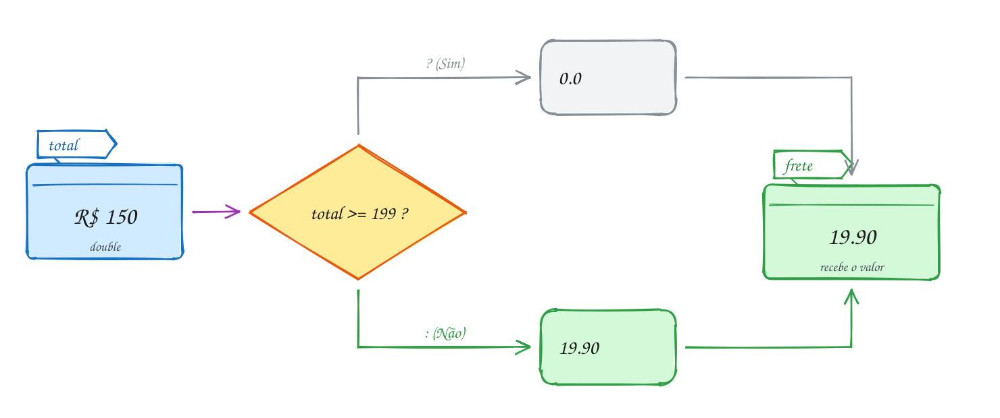
#include <stdio.h>
int main(void) {
int qtd = 3;
double total = 150.0;
double frete = total >= 199 ? 0.0 : 19.90;
printf("%d %s no carrinho\n", qtd, qtd == 1 ? "item" : "itens");
printf("Frete: R$ %.2f\n", frete);
printf("Total: R$ %.2f\n", total + frete);
return 0;
}
// Saída:
// 3 itens no carrinho
// Frete: R$ 19.90
// Total: R$ 169.90
O desenho é um if/else em que cada lado só guarda um valor na mesma
variável; um ternário resolve isso em uma linha:
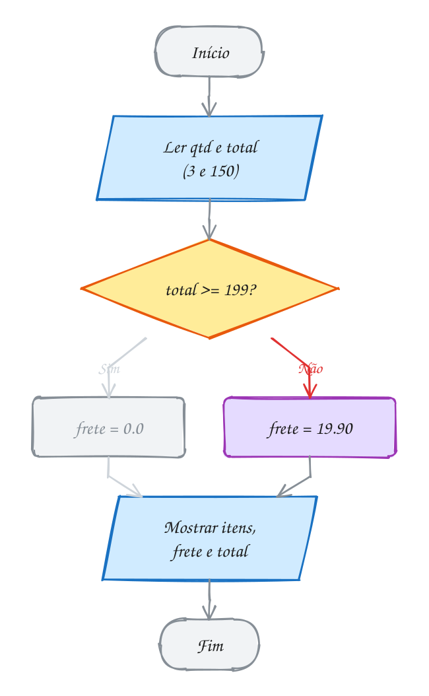
Exemplo A033 · O ternário que protege a divisão
#include <stdio.h>
int main(void) {
int vendido = 0; // o food truck ainda não abriu
int dias = 0;
// só um dos lados é calculado: com dias == 0, a divisão nem acontece
double media = dias != 0 ? (double) vendido / dias : 0.0;
printf("Média por dia: R$ %.2f\n", media);
printf("Situação: %s\n", dias != 0 ? "funcionando" : "ainda não abriu");
// os dois lados viram um tipo comum: int com double dá double
int pedidos = 3;
printf("Fator: %.1f\n", pedidos > 0 ? pedidos : 0.5); // sai 3.0, não 3
// no meio de uma conta, o ternário vai entre parênteses
double taxa = 5.0 + (pedidos > 2 ? 2.5 : 0.0);
printf("Taxa de entrega: R$ %.2f\n", taxa);
return 0;
}
// Saída:
// Média por dia: R$ 0.00
// Situação: ainda não abriu
// Fator: 3.0
// Taxa de entrega: R$ 7.50
gcc ~/LPEDC/material/A033.c -o ~/LPEDC/material/A033 && ~/LPEDC/material/A033
Exemplo A034 · Maior, distância do zero e verdade em texto
#include <stdbool.h>
#include <stdio.h>
int main(void) {
int preco_a = 14;
int preco_b = 31;
int temperatura = -3;
bool chuva = true;
int maior = preco_a > preco_b ? preco_a : preco_b;
int distancia = temperatura < 0 ? -temperatura : temperatura;
printf("Maior preço: R$ %d\n", maior);
printf("Distância do zero: %d graus\n", distancia);
printf("Vai chover? %s\n", chuva ? "true" : "false"); // texto no lugar de 1 ou 0
// ternário dentro de ternário: funciona, mas já começa a pesar
printf("Temperatura %s\n",
temperatura > 0 ? "positiva" : temperatura < 0 ? "negativa" : "zero");
return 0;
}
// Saída:
// Maior preço: R$ 31
// Distância do zero: 3 graus
// Vai chover? true
// Temperatura negativa
gcc ~/LPEDC/material/A034.c -o ~/LPEDC/material/A034 && ~/LPEDC/material/A034
Exercício E097 · ★☆☆
O ingresso do cinema custa R$ 40.00 para quem tem 18 anos ou mais e R$ 20.00 para os menores. Leia a idade, sem mostrar pergunta, e guarde o preço numa variável double em UMA linha, com o operador ternário (sem if). Mostre o preço com duas casas.
Entrada:
15
Saída esperada:
Ingresso: R$ 20.00
Exercício E099 · ★★☆
Leia dois inteiros, a e b, sem mostrar pergunta, e mostre quatro linhas, cada resultado saído de UM ternário (nada de if): a distância entre os dois (o maior menos o menor); se a soma é "par" ou "ímpar"; o menor dos dois; e se a é "divisível" ou "não divisível" por b. Com b igual a 0, a última linha mostra "não dá para dividir por zero", sem calcular o resto. Teste com 2 5.
Entrada:
2 5
Saída esperada:
Distância: 3
Soma: ímpar
Menor: 2
2 por 5: não divisível
Exercício E100 · ★★☆
Leia três notas inteiras de jurados, na mesma linha, e mostre a maior, usando só o operador ternário (nada de if).
Entrada:
7 10 9
Saída esperada:
Maior nota: 10
Exercício E102 · ★★★
Converta uma hora do formato 24 h (0 a 23) para o formato de 12 h com AM e PM, usando ternários. Meia-noite é 12 AM e meio-dia é 12 PM. Se a hora não estiver entre 0 e 23, mostre "Hora inválida." (pode usar um if para isso). Teste com 13, 0 e 12.
Entrada:
13
Saída esperada:
1 PM
Entrada:
0
Saída esperada:
12 AM
Entrada:
12
Saída esperada:
12 PM
O else if do 0016 resolve faixas: até 60, até 72, até 90. Há um outro
tipo de escolha, mais simples, em que você só quer saber qual valor
exato chegou. A opção 1, 2 ou 3 de um menu; a letra S ou N de uma
resposta. Dá para fazer com else if, repetindo codigo == 1,
codigo == 2, codigo == 3, mas o C tem um comando feito para isso.
Pense na lanchonete com cardápio numerado: 1 é X-Burger, 2 é X-Salada, 3 é Misto quente. Você diz "um 2". O atendente não testa se o seu número é maior ou menor que alguma coisa; ele vai direto à linha 2 do cardápio.
Esse "vá direto ao valor igual" é o switch, chamado de seleção
múltipla. Ele calcula a expressão entre parênteses uma vez só e pula
direto para o case que tem o mesmo valor. Se nenhum case casar, o
programa vai para o default, que pega todo o resto (DEITEL; DEITEL,
2011, cap. 4). O default é opcional, mas é nele que você trata o valor
inválido, como um código 7 que não existe no cardápio.
switch (codigo) {
case 1:
// código igual a 1
break;
case 2:
// código igual a 2
break;
default:
// nenhum dos anteriores
}
Em troca dessa rapidez, as regras são mais rígidas que as do if. A
expressão do switch tem de ser inteira: int, char (que é um
número, 0002) ou parecido. Um double ou um texto não compilam (DEITEL;
DEITEL, 2011, cap. 4). Cada case leva uma constante, um valor
conhecido já na hora de compilar, como case 2: ou case 'S':. Por isso
case x:, com uma variável, e case > 10:, com uma comparação, não
valem, e dois case não podem ter o mesmo valor (KERNIGHAN; RITCHIE,
1988, cap. 3).
Essas restrições têm um motivo. Como os valores dos case são conhecidos
antes de o programa rodar, o compilador pode montar uma tabela de
saltos, uma lista de endereços indexada pelo valor. Com valores próximos,
como 1, 2 e 3, o programa vai ao case certo num passo só, sem comparar
um por um como numa escada de else if.
Agora a parte que mais surpreende. O case não é um bloco: é só um
rótulo, uma marca que diz por onde entrar. Depois de entrar, o C
executa tudo para baixo, atravessando os case seguintes, até
encontrar um break ou chegar ao fim do switch (BACKES, 2013,
cap. 4). Esse atravessar tem nome, fall-through, "cair através". O
break é a ordem de sair do switch naquele ponto; por isso ele aparece
no fim de quase todo case.
Às vezes o fall-through é exatamente o que você quer. Vários case
empilhados, sem nada entre eles, dividem o mesmo trecho: case 'S': case 's': aceita a resposta em maiúscula e em minúscula. Se o
fall-through for de propósito e houver código no meio do caminho, avise
quem lê com o comentário // fall through, que o gcc reconhece e não
reclama (GNU, s.d.).
[!WARNING] Esquecer o
break. Sem o docase 2, pedir X-Salada mostra também "Misto quente" e o preço vira 9.00: ocase 3também rodou e sobrescreveu o preço. O compilador não vê erro; o-Wextraavisa ("this statement may fall through").
Na lanchonete, 1 é X-Burger, 2 é X-Salada, 3 é Misto quente. O código 2
entra, o switch pula direto para o case 2, sem testar o 1 nem o 3, e o
break sai antes do case 3:
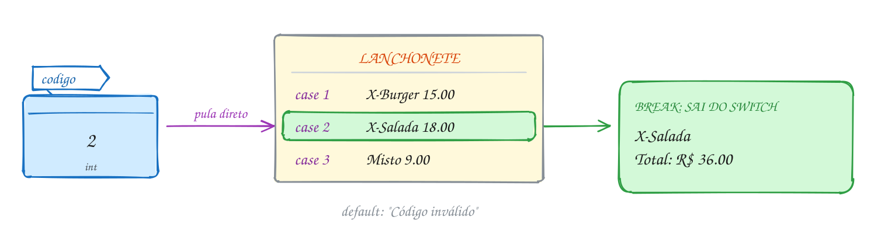
#include <stdio.h>
int main(void) {
int codigo = 2;
int quantidade = 2;
double preco = 0;
switch (codigo) {
case 1:
printf("X-Burger\n");
preco = 15.00;
break;
case 2:
printf("X-Salada\n");
preco = 18.00;
break; // sem ele, cairia no case 3
case 3:
printf("Misto quente\n");
preco = 9.00;
break;
default:
printf("Código inválido\n");
}
printf("Total: R$ %.2f\n", quantidade * preco);
return 0;
}
// Saída:
// X-Salada
// Total: R$ 36.00
O losango do switch tem várias saídas, uma por case e uma para o
default; as setas levam o valor no lugar de Sim e Não:
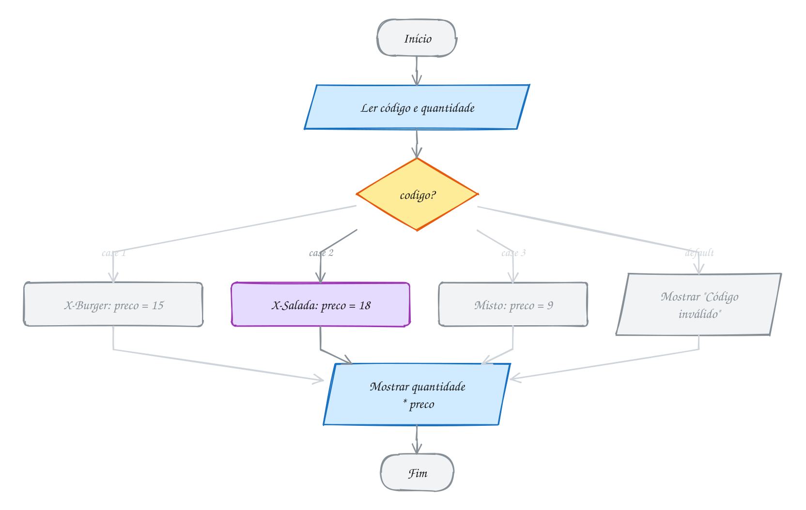
Exemplo A035 · Faixas de nota com a divisão inteira
#include <stdio.h>
// O switch só compara com valores exatos. Para usar faixas, transforme a
// faixa num número: 87 / 10 dá 8 na divisão inteira.
int main(void) {
int nota = 87; // de 0 a 100
char conceito;
switch (nota / 10) {
case 10: // 100 também é A
case 9:
conceito = 'A';
break;
case 8:
conceito = 'B';
break;
case 7:
conceito = 'C';
break;
default: // de 0 a 69
conceito = 'D';
}
printf("Nota %d: conceito %c\n", nota, conceito);
// char também é número: dá para fazer switch numa letra
switch (conceito) {
case 'A':
case 'B':
printf("Parabéns!\n");
break;
case 'C':
printf("Passou raspando.\n");
break;
default:
printf("Vai para a recuperação.\n");
}
return 0;
}
// Saída:
// Nota 87: conceito B
// Parabéns!
gcc ~/LPEDC/material/A035.c -o ~/LPEDC/material/A035 && ~/LPEDC/material/A035
Exemplo A036 · Quantos dias tem o mês
#include <stdbool.h>
#include <stdio.h>
// Vários case empilhados dividem o mesmo código: é o fall-through do bem.
int main(void) {
int mes = 2;
int ano = 2024;
int dias;
switch (mes) {
case 1:
case 3:
case 5:
case 7:
case 8:
case 10:
case 12:
dias = 31;
break;
case 4:
case 6:
case 9:
case 11:
dias = 30;
break;
case 2: { // as chaves abrem um bloco: em C17, um rótulo não pode vir
// colado numa declaração
bool bissexto = (ano % 4 == 0 && ano % 100 != 0) || ano % 400 == 0;
dias = bissexto ? 29 : 28;
break;
}
default:
dias = 0; // mês que não existe
}
if (dias == 0) {
printf("Mês inválido.\n");
} else {
printf("O mês %d de %d tem %d dias.\n", mes, ano, dias);
}
return 0;
}
// Saída:
// O mês 2 de 2024 tem 29 dias.
gcc ~/LPEDC/material/A036.c -o ~/LPEDC/material/A036 && ~/LPEDC/material/A036
Exercício E103 · ★☆☆
Leia um número de 1 a 7, sem mostrar pergunta, e mostre o dia da semana (1 é domingo, 7 é sábado). Qualquer outro número mostra "Dia inválido.". Use switch.
Entrada:
4
Saída esperada:
Quarta-feira
Exercício E105 · ★★☆
O atendimento por telefone do banco tem um menu de teclas: 1 mostra "Consultar saldo."; 2 mostra "Segunda via da fatura."; 9 mostra "Transferindo para um atendente..."; 0 mostra "Repetindo o menu.". Qualquer outra tecla mostra "Opção inválida." e, em seguida, também repete o menu. Escreva com UM switch em que o default fica no meio, logo antes do case 0, e cai nele de propósito (sem repetir o printf do menu). Leia a tecla sem mostrar pergunta. Teste com 7.
Entrada:
7
Saída esperada:
Opção inválida.
Repetindo o menu.
Exercício E106 · ★★☆
Calculadora de bolso. Leia uma conta no formato "número operador número" (por exemplo, 20 / 4), sem mostrar pergunta, e mostre o resultado com duas casas depois de "= ". Aceite + - * / e trate dois erros: "Divisão por zero." e "Operador inválido.".
Entrada:
20 / 4
Saída esperada:
= 5.00
Exercício E107 · ★★★
A pizzaria mostra o preço da pizza escolhida. Leia uma letra, sem mostrar pergunta: M é Muçarela (R$ 45.00), C é Calabresa (R$ 50.00) e P é Portuguesa (R$ 55.00), em maiúscula ou minúscula. Use switch e mostre só a linha da pizza escolhida. Qualquer outra letra mostra "Opção inválida.". Teste com m, P e x.
Entrada:
m
Saída esperada:
Muçarela: R$ 45.00
Entrada:
P
Saída esperada:
Portuguesa: R$ 55.00
Entrada:
x
Saída esperada:
Opção inválida.
O módulo apresentou as ferramentas de decisão do C: comparações, operadores
lógicos, if e if/else, else if, ternário e switch. Num programa de
verdade elas aparecem juntas, e a pergunta deixa de ser "como se escreve" e
passa a ser "qual delas serve aqui". Escolher bem deixa o código curto e
fácil de conferir; escolher mal produz escadas de if que ninguém consegue
seguir.
Pense de novo na conta de luz do 0011, agora com as regras de verdade. O valor depende do consumo e da bandeira do mês, verde, amarela ou vermelha. Famílias de baixa renda têm a tarifa social, um desconto. A taxa de iluminação muda com o consumo, e um carimbo diz se o consumo foi baixo, médio ou alto. Cada uma dessas regras é uma decisão diferente, e cada uma tem a sua forma.
A forma da pergunta indica a ferramenta (DEITEL; DEITEL, 2011, cap. 4). Se
a resposta é um entre poucos valores exatos, como a letra da bandeira,
o switch (0018) pula direto para ela. Se a regra exige duas condições
ao mesmo tempo, como ter tarifa social e consumir até 220 kWh, é um if
com && (0013), um passo a mais ou nada. Se a decisão só escolhe um
valor entre dois, como R$ 15 ou R$ 5 de iluminação, o ternário (0017)
resolve numa linha. E se o valor cai em faixas, como baixo, médio e
alto, o else if (0016) testa em ordem. A tabela resume:
| Decisão | Ferramenta | Por quê |
|---|---|---|
| a bandeira é V, A ou R? | switch |
valores exatos de um char |
| tem tarifa social e consumo até 220 kWh? | if com && |
duas condições juntas, um passo a mais ou nada |
| iluminação: R$ 15 acima de 100 kWh, senão R$ 5 | ternário | escolhe um valor entre dois |
| consumo baixo, médio ou alto? | else if |
faixas, testadas em ordem |
| a leitura deu certo e o consumo não é negativo? | if com || |
barra a entrada ruim logo no começo |
A última linha da tabela trata de outra coisa: a entrada. Um programa que
lê do teclado precisa desconfiar de quem digita. O scanf devolve
quantos valores leu (0006); se ele pediu um número e veio "abc",
devolve 0, e a variável continua com lixo (BACKES, 2013, cap. 2). Por isso
a primeira decisão do programa é conferir a leitura: scanf(...) != 1 ou
um consumo negativo indicam entrada ruim.
O jeito de reagir a essa entrada ruim tem nome: cláusula de guarda.
Você trata o caso ruim primeiro, mostra um aviso e encerra o programa com
return 1. O número 1 é um código de erro que o terminal enxerga; depois
de rodar, echo $? o mostra. A vantagem aparece no resto do código: como o
caso ruim já saiu, tudo o que vem depois fica reto, sem um else gigante
envolvendo o programa inteiro.
As tarifas do exemplo são simplificadas para a conta caber de cabeça. A energia custa R$ 0,80 por kWh. A bandeira amarela soma R$ 0,02 por kWh, e a vermelha, R$ 0,05; a verde não soma nada. O desconto social é de 40% e vale sobre a energia e a bandeira, mas não sobre a iluminação. Com essas regras, a ordem dos passos passa a fazer parte da conta.
[!WARNING] A ordem dos passos é parte da regra. O desconto vale sobre energia e bandeira, não sobre a iluminação. Teste um caso que passe por todos os ramos: 150 kWh, verde, social dá 120 + 0 - 48 + 15 = R$ 87.00.
A conta de luz do módulo 01 volta com decisões. Com 230 kWh, bandeira amarela e sem tarifa social, cada decisão do módulo entra uma vez:
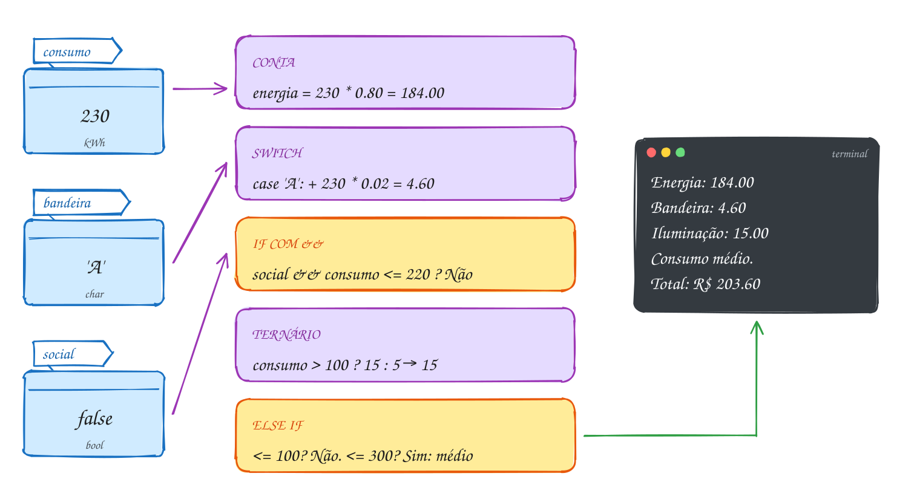
#include <stdbool.h>
#include <stdio.h>
int main(void) {
int consumo, resposta;
char bandeira;
printf("Consumo do mês (kWh): ");
if (scanf("%d", &consumo) != 1 || consumo < 0) { // guarda
printf("Consumo inválido.\n");
return 1;
}
printf("Bandeira (V, A ou R): ");
if (scanf(" %c", &bandeira) != 1) {
printf("Bandeira inválida.\n");
return 1;
}
printf("Tarifa social (1 = sim, 0 = não): ");
if (scanf("%d", &resposta) != 1) {
printf("Resposta inválida.\n");
return 1;
}
bool social = resposta;
double adicional; // por kWh, conforme a bandeira
switch (bandeira) {
case 'V':
case 'v':
adicional = 0.0;
break;
case 'A':
case 'a':
adicional = 0.02;
break;
case 'R':
case 'r':
adicional = 0.05;
break;
default:
printf("Bandeira inválida.\n");
return 1;
}
double energia = consumo * 0.80;
double extra = consumo * adicional;
double desconto = 0.0;
if (social && consumo <= 220) {
desconto = (energia + extra) * 0.40;
}
double iluminacao = consumo > 100 ? 15.0 : 5.0;
double total = energia + extra - desconto + iluminacao;
printf("Energia: R$ %.2f\n", energia);
printf("Bandeira: R$ %.2f\n", extra);
if (desconto > 0) {
printf("Desconto social: -R$ %.2f\n", desconto);
}
printf("Iluminação pública: R$ %.2f\n", iluminacao);
if (consumo <= 100) {
printf("Consumo baixo.\n");
} else if (consumo <= 300) {
printf("Consumo médio.\n");
} else {
printf("Consumo alto.\n");
}
printf("Total: R$ %.2f\n", total);
return 0;
}
// Consumo do mês (kWh): 230
// Bandeira (V, A ou R): A
// Tarifa social (1 = sim, 0 = não): 0
// Energia: R$ 184.00
// Bandeira: R$ 4.60
// Iluminação pública: R$ 15.00
// Consumo médio.
// Total: R$ 203.60
A guarda tem uma saída direta para o Fim. Depois dela, o caminho é quase reto, com um único desvio opcional para o desconto:
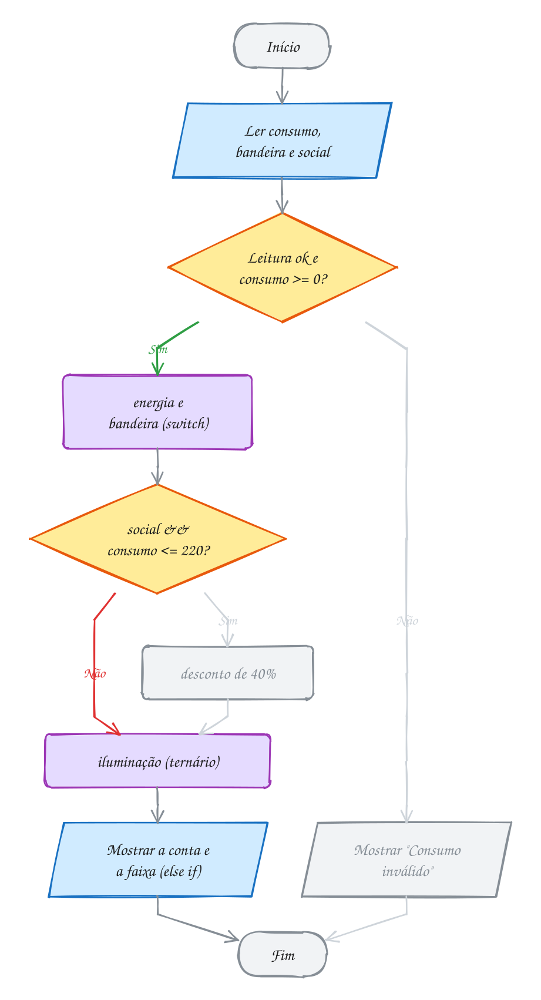
Exemplo A037 · A situação no fim do semestre
#include <stdbool.h>
#include <stdio.h>
int main(void) {
double nota1 = 6.5;
double nota2 = 8.0;
int frequencia = 80; // porcentagem de presença
// guarda: dado impossível sai logo
if (nota1 < 0 || nota1 > 10 || nota2 < 0 || nota2 > 10 ||
frequencia < 0 || frequencia > 100) {
printf("Dados inválidos.\n");
return 1;
}
double media = (nota1 + nota2) / 2;
bool presente = frequencia >= 75;
printf("Média: %.2f\n", media);
printf("Frequência: %d%% (%s)\n", frequencia, presente ? "ok" : "abaixo de 75%");
if (!presente) { // a falta reprova antes de olhar a nota
printf("Reprovado por falta.\n");
} else if (media >= 7) {
printf("Aprovado.\n");
} else if (media >= 4) {
printf("Recuperação: precisa de %.2f na prova final.\n", 10 - media);
} else {
printf("Reprovado por nota.\n");
}
switch ((int) media) { // o cast corta as casas: 7.25 vira 7
case 10:
case 9:
printf("Menção: excelente\n");
break;
case 8:
case 7:
printf("Menção: bom\n");
break;
default:
printf("Menção: precisa melhorar\n");
}
return 0;
}
// Saída:
// Média: 7.25
// Frequência: 80% (ok)
// Aprovado.
// Menção: bom
gcc ~/LPEDC/material/A037.c -o ~/LPEDC/material/A037 && ~/LPEDC/material/A037
Exemplo A038 · Pedra, papel e tesoura
#include <stdbool.h>
#include <stdio.h>
// P = pedra, A = papel, T = tesoura. Pedra quebra tesoura, tesoura corta
// papel, papel embrulha pedra.
int main(void) {
char j1 = 'P';
char j2 = 'T';
bool valida1 = j1 == 'P' || j1 == 'A' || j1 == 'T';
bool valida2 = j2 == 'P' || j2 == 'A' || j2 == 'T';
if (!valida1 || !valida2) { // guarda: jogada que não existe
printf("Jogada inválida.\n");
return 1;
}
printf("Jogador 1: %s\n", j1 == 'P' ? "pedra" : j1 == 'A' ? "papel" : "tesoura");
printf("Jogador 2: %s\n", j2 == 'P' ? "pedra" : j2 == 'A' ? "papel" : "tesoura");
bool vence1 = (j1 == 'P' && j2 == 'T') ||
(j1 == 'T' && j2 == 'A') ||
(j1 == 'A' && j2 == 'P');
if (j1 == j2) {
printf("Empate!\n");
} else if (vence1) {
printf("Jogador 1 venceu!\n");
} else {
printf("Jogador 2 venceu!\n");
}
return 0;
}
// Saída:
// Jogador 1: pedra
// Jogador 2: tesoura
// Jogador 1 venceu!
gcc ~/LPEDC/material/A038.c -o ~/LPEDC/material/A038 && ~/LPEDC/material/A038
Exercício E109 · ★☆☆
Leia o peso (kg) e a altura (m), na mesma linha, calcule o IMC = peso / altura² e mostre o IMC com duas casas e a classificação: abaixo de 18.5, "Abaixo do peso"; abaixo de 25, "Peso normal"; abaixo de 30, "Sobrepeso"; senão, "Obesidade". Se a leitura falhar ou a altura não for positiva, mostre "Dados inválidos." e saia com return 1.
Entrada:
70 1.75
Saída esperada:
IMC: 22.86
Peso normal
Exercício E111 · ★★☆
Leia uma data no formato dia/mês/ano e diga se ela existe ("Data válida." ou "Data inválida."). O mês vai de 1 a 12; o dia vai de 1 até o número de dias do mês, e fevereiro tem 29 dias nos anos bissextos. Teste com 29/02/2023 e com 29/02/2024.
Entrada:
29/02/2023
Saída esperada:
Data inválida.
Entrada:
29/02/2024
Saída esperada:
Data válida.
Exercício E112 · ★★☆
Escreva o programa do pedágio. Leia a categoria: 1 moto paga R$ 6.00; 2 carro paga R$ 12.00; 3 caminhão paga R$ 12.00 por eixo (nesse caso, leia também o número de eixos). Outra categoria mostra "Categoria inválida." e termina com return 1. Depois leia a hora (0 a 23). No horário de pico (das 17h às 19h59), a tarifa sobe 20% (use um ternário). Não mostre perguntas. Mostre se é horário de pico ("sim" ou "não") e a tarifa. Teste com carro às 18h e com caminhão de 4 eixos às 10h.
Entrada:
2
18
Saída esperada:
Horário de pico? sim
Tarifa: R$ 14.40
Entrada:
3
4
10
Saída esperada:
Horário de pico? não
Tarifa: R$ 48.00
Exercício E114 · ★★★
Dia seguinte. Leia uma data válida no formato dia/mês/ano e mostre a data do dia seguinte, com dois dígitos no dia e no mês. Cuidado com as viradas: fim de mês, fim de ano e fevereiro de ano bissexto. Teste com 28/02/2024 e com 31/12/2023.
Entrada:
28/02/2024
Saída esperada:
Dia seguinte: 29/02/2024
Entrada:
31/12/2023
Saída esperada:
Dia seguinte: 01/01/2024
30 exercícios que misturam os assuntos do módulo, no ritmo da prova. Arquivos P0201.c a P0230.c, em material/; resoluções em _respostas/02-condicionais/lista/.
Exercício P0201 · ★☆☆ · O rodízio de placas
No rodízio de carros, o último dígito da placa decide o dia em que o carro não roda: 1 e 2 na segunda, 3 e 4 na terça, 5 e 6 na quarta, 7 e 8 na quinta, 9 e 0 na sexta. A placa do seu carro termina em 4827. Escreva um programa que pegue o último dígito com % e use um switch com case empilhados para mostrar o dia:
Saída esperada:
Final da placa: 7
Rodízio na quinta-feira
Exercício P0202 · ★☆☆ · A multa da biblioteca
A biblioteca cobra R$ 1.50 por dia de atraso na devolução. Escreva um programa que leia quantos dias o livro atrasou e mostre a multa; se não atrasou (0 dias), mostre "Sem multa." Um exemplo de interação:
Saída esperada:
Dias de atraso: 4
Multa: R$ 6.00
Resposta esperada: com 4 dias, Multa: R$ 6.00; com 0, Sem multa.
Exercício P0203 · ★☆☆ · O ingresso do sócio-torcedor
No jogo do Manaus FC, o ingresso custa R$ 60.00, e sócio-torcedor paga metade. Escreva um programa com duas variáveis bool, carla_socia = true e beto_socio = false, e calcule o preço de cada um com o operador ternário (nenhum if):
Saída esperada:
Carla paga R$ 30.00
Beto paga R$ 60.00
Resposta esperada: R$ 30.00 e R$ 60.00.
Exercício P0204 · ★☆☆ · A bandeira da conta de luz
A conta de luz custa R$ 0.80 por kWh, mais um adicional por bandeira a cada 100 kWh: verde ('V') R$ 0.00, amarela ('A') R$ 1.885, vermelha 1 ('R') R$ 4.463 e vermelha 2 ('P') R$ 7.877. Neste mês a casa gastou 220 kWh com bandeira amarela. Escreva um programa com char bandeira = 'A'; que escolha o adicional com um switch e mostre a conta:
Saída esperada:
Consumo: 220 kWh
Adicional da bandeira: R$ 4.15
Total: R$ 180.15
Exercício P0205 · ★☆☆ · Pode doar sangue?
Para doar sangue, a pessoa precisa ter de 16 a 69 anos e pesar pelo menos 50 kg. Escreva um programa com os dados de duas pessoas, Ana (17 anos, 52 kg) e Rui (72 anos, 80 kg), que guarde a resposta de cada uma numa variável bool e mostre "sim" ou "não":
Saída esperada:
Ana pode doar? sim
Rui pode doar? não
Resposta esperada: Ana sim, Rui não.
Exercício P0206 · ★☆☆ · O Pix que passou do saldo
Você tem R$ 150.00 na conta e mandou um Pix de R$ 200.00 usando o cheque especial. Escreva um programa que desconte o Pix do saldo e, se o saldo ficou negativo, mostre o saldo e os juros de 8% sobre o que ficou devendo; senão, mostre só o saldo:
Saída esperada:
Saldo: R$ -50.00
Você entrou no cheque especial.
Juros do mês: R$ 4.00
Exercício P0207 · ★☆☆ · O radar da avenida
O radar da avenida marca 60 km/h. Até 60, nada acontece. Acima de 60 até 72 (20% a mais), a infração é média: R$ 130.16. Acima de 72 até 90 (50% a mais), é grave: R$ 195.23. Acima de 90, gravíssima: R$ 880.41. Escreva um programa que leia a velocidade (inteira) e mostre a infração com else if:
Saída esperada:
Velocidade (km/h): 75
Infração grave: R$ 195.23
Resposta esperada: com 75, Infração grave: R$ 195.23.
Exercício P0208 · ★☆☆ · A recarga do cartão do ônibus
A máquina de recarga pede quantas passagens de R$ 4.50 você quer. Se a pessoa digitar algo que não é número, o scanf não lê nada. Escreva um programa que confira o retorno do scanf: se não for 1, mostre "Entrada inválida." e termine com return 1; se for, mostre o valor da recarga. Duas interações:
Saída esperada:
Quantas passagens? abc
Entrada inválida.
Quantas passagens? 10
Recarga: R$ 45.00
Resposta esperada: "Entrada inválida." com abc; R$ 45.00 com 10.
Exercício P0209 · ★☆☆ · O troco que não bate
O caixa somou duas moedas de R$ 0.10 e R$ 0.20 e comparou com R$ 0.30 usando ==. O programa abaixo diz que o troco está errado, mas a conta está certa: o problema é a comparação de double, e ela está assim de propósito. Conserte o if: considere iguais os valores que diferem menos de 0.000001 (use fabs):
Saída esperada:
Soma: 0.30000000000000004
Troco certo.
gcc ~/LPEDC/material/P0209.c -o ~/LPEDC/material/P0209 -lm && ~/LPEDC/material/P0209
Exercício P0210 · ★☆☆ · O drone na área liberada
O drone de filmagem só pode voar no retângulo liberado pela prefeitura, que vai de x = 0 a x = 200 e de y = 0 a y = 120 (metros), bordas incluídas. Escreva um programa que diga, para o drone em (150, 130) e depois em (200, 45), se ele está dentro ou fora da área:
Saída esperada:
Drone em (150, 130): fora da área
Drone em (200, 45): dentro da área
Resposta esperada: fora, depois dentro (200 está na borda, e a borda vale).
Exercício P0211 · ★★☆ · A nota do jurado do meio
No festival de quadrilha, três jurados dão notas e vale a nota do meio (a mediana): nem a maior, nem a menor. Os jurados deram 7.5, 9.0 e 8.0. Escreva um programa que descubra a nota do meio com if e else if, sem ordenar nada:
Saída esperada:
Notas: 7.5 9.0 8.0
Nota do meio: 8.0
Exercício P0212 · ★★☆ · A integração do ônibus
A passagem custa R$ 4.50, e a segunda viagem é de graça se começar até 120 minutos depois da primeira. Você embarcou às 07:40 e pegou o segundo ônibus às 09:25. Escreva um programa que converta os dois horários para minutos desde a meia-noite, calcule o intervalo e mostre quanto a segunda viagem custa:
Saída esperada:
Intervalo: 105 min
Integração: a segunda viagem sai por R$ 0.00
Resposta esperada: 105 min, R$ 0.00.
Exercício P0213 · ★★☆ · A divisão por zero do estoque
A loja quer avisar quando o pedido é maior que o dobro do estoque. O programa abaixo testa pedido / estoque >= 2 e, com estoque zerado, divide por zero e quebra. O bug está lá de propósito. Conserte só a condição, usando o curto-circuito do &&, para que a divisão nunca aconteça com estoque 0:
Saída esperada:
Estoque: 0, pedido: 5
Sem estoque: avise o cliente.
Exercício P0214 · ★★☆ · O financiamento aprovado
O programa abaixo aprova o financiamento com três if aninhados: renda de pelo menos R$ 3000, idade de 18 a 65 anos e nome limpo. Ele funciona, mas é difícil de ler. Refatore: troque os três if por um if só, com && e ||, e um else. A saída tem que continuar a mesma:
Saída esperada:
Renda: R$ 4200.00, idade: 34, nome limpo: 1
Financiamento aprovado.
Exercício P0215 · ★★☆ · Que horas são em Manaus?
O Brasil tem quatro fusos: Fernando de Noronha ('F', uma hora a mais que Brasília), Brasília ('B'), Manaus ('M', uma a menos) e Acre ('A', duas a menos). O jogo começa às 23:30 de Brasília. Escreva um programa que leia a letra do fuso e mostre a hora local, com um switch para achar a diferença e % 24 para a hora não passar de 23 nem ficar negativa:
Saída esperada:
Fuso (F, B, M ou A): F
Hora local: 00:30
Resposta esperada: F dá 00:30; M dá 22:30; A dá 21:30.
Exercício P0216 · ★★☆ · O cupom da loja virtual
A regra da promoção é: o cupom vale para cliente VIP ou para compra acima de R$ 100, mas em qualquer caso só se o cupom não estiver vencido. O programa abaixo dá desconto para um VIP com cupom vencido, porque o && é feito antes do ||. O erro está lá de propósito: conserte a condição com parênteses:
Saída esperada:
Compra: R$ 80.00, VIP: 1, cupom vencido: 1
Cupom recusado.
Exercício P0217 · ★★☆ · A bandeira 2 do táxi
O táxi cobra R$ 5.50 de bandeirada mais o km rodado: R$ 3.20 na bandeira 1 e R$ 3.84 na bandeira 2. A bandeira 2 vale aos domingos (dia 0) e, em qualquer dia, das 20h às 6h (hora >= 20 ou hora < 6). Escreva um programa para uma corrida de 8.5 km numa quarta-feira (dia 3) às 21h:
Saída esperada:
Bandeira 2
Corrida de 8.5 km: R$ 38.14
Resposta esperada: Bandeira 2, R$ 38.14.
Exercício P0218 · ★★☆ · O ícone da bateria
O celular mostra a bateria como "cheia" (80% ou mais), "ok" (de 20% a 79%) ou "baixa" (menos de 20%). Escreva um programa que classifique 95, 47 e 12 por cento usando um ternário encadeado (um ternário dentro do outro), sem if:
Saída esperada:
95%: cheia
47%: ok
12%: baixa
Resposta esperada: cheia, ok e baixa.
Exercício P0219 · ★★☆ · Pedra, papel, tesoura, lagarto, Spock
Numere as jogadas assim: 0 pedra, 1 Spock, 2 papel, 3 lagarto, 4 tesoura. Nessa ordem, cada jogada vence as duas que vêm antes dela, dando a volta: se d = (a − b + 5) % 5, então d = 0 é empate, d = 1 ou 2 o jogador A vence, e d = 3 ou 4 o B vence. Escreva um programa que leia as duas jogadas e mostre o resultado com um switch em d:
Saída esperada:
Jogada de A (0 a 4): 4
Jogada de B (0 a 4): 3
A vence!
Resposta esperada: 4 (tesoura) contra 3 (lagarto): A vence!
Exercício P0220 · ★★☆ · Poupança ou CDB?
Você tem R$ 5000.00 para guardar por 6 meses. A poupança rende 0.5% ao mês e não paga imposto. O CDB rende 0.9% ao mês, mas paga 22.5% de imposto sobre o rendimento. Escreva um programa que calcule o rendimento líquido de cada um (juros compostos com pow) e diga qual vale mais:
Saída esperada:
Poupança: R$ 151.89
CDB: R$ 214.02
Melhor opção: CDB
gcc ~/LPEDC/material/P0220.c -o ~/LPEDC/material/P0220 -lm && ~/LPEDC/material/P0220
Exercício P0221 · ★★★ · Que dia do ano é a prova
A prova do PPGI é em 27/11/2026. Escreva um programa que descubra que dia do ano é essa data (1º de janeiro é o dia 1) com um switch no mês que usa o fall-through de propósito: comece no case do mês anterior ao da data e vá somando os dias de cada mês até janeiro. Mostre também quantos dias faltam para o ano acabar:
Saída esperada:
27/11/2026 é o dia 331 do ano
Faltam 34 dias para o ano acabar
Resposta esperada: dia 331, faltam 34 dias.
Exercício P0222 · ★★★ · A data por extenso
O sistema da secretaria quer a data por extenso, com o dia da semana. Escreva um programa que leia uma data no formato dd/mm/aaaa, confira se o scanf leu os três números e se o mês vai de 1 a 12, descubra o dia da semana com a fórmula (a = (14 − mês) / 12, y = ano − a, m = mês + 12a − 2, semana = (dia
Saída esperada:
Data (dd/mm/aaaa): 27/11/2026
27 de novembro de 2026, sexta-feira
Exercício P0223 · ★★★ · O placar do set de vôlei
Um set de vôlei acaba quando um time chega a 25 pontos com pelo menos 2 de vantagem; se empatar em 24, o jogo segue até alguém abrir 2 (26 × 24, 27 × 25...). Escreva um programa que leia o placar dos times A e B e diga se o set está em andamento, quem venceu, ou se o placar é impossível (negativo, ou acima de 25 com mais de 2 de diferença, como 27 × 20, porque o set teria acabado antes). Três interações:
Saída esperada:
Placar (A B): 25 23
Set do time A (25 x 23)
Placar (A B): 25 24
Set em andamento
Placar (A B): 27 20
Placar impossível
Resposta esperada: as três saídas acima.
Exercício P0224 · ★★★ · O desempate do campeonato
No campeonato, a classificação desempata nesta ordem: pontos, vitórias, saldo de gols (gols pró − gols contra) e gols pró. Se tudo empatar, vale o sorteio. O Manaus FC fez 58 pontos, 17 vitórias, 50 gols pró e 31 contra. O Amazonas FC fez 58 pontos, 17 vitórias, 54 gols pró e 35 contra. Escreva um programa que diga quem fica na frente e qual critério decidiu:
Saída esperada:
Manaus FC: 58 pts, 17 V, saldo 19, 50 GP
Amazonas FC: 58 pts, 17 V, saldo 19, 54 GP
Na frente: Amazonas FC (critério: gols pró)
Exercício P0225 · ★★★ · Choque de horários na agenda
A agenda precisa avisar quando dois compromissos se sobrepõem. Escreva um programa que leia o início e o fim de dois compromissos no formato hh:mm e mostre se há conflito e de quantos minutos. Encostar (um acaba às 10:00 e o outro começa às 10:00) não é conflito. Duas interações:
Saída esperada:
Compromisso 1 (início fim): 14:00 15:30
Compromisso 2 (início fim): 15:00 16:00
Conflito de 30 minutos
Compromisso 1 (início fim): 09:00 10:00
Compromisso 2 (início fim): 10:00 11:00
Sem conflito
Resposta esperada: 30 minutos no primeiro caso; sem conflito no segundo.
Exercício P0226 · ★★★ · O caixa eletrônico com poucas notas
O caixa eletrônico tem só 2 notas de R$ 50, 10 de R$ 20 e 3 de R$ 10. Escreva um programa que leia o valor do saque e pague com as notas maiores primeiro, sem passar do que existe de cada uma. Se não der para pagar o valor exato, mostre "Sem notas para esse valor." Sem laço: para cada nota, use = menor entre (resto / nota) e as notas que existem. Duas interações:
Saída esperada:
Saque: 290
2 x R$ 50
9 x R$ 20
1 x R$ 10
Saque: 380
Sem notas para esse valor.
Resposta esperada: 2 x 50, 9 x 20 e 1 x 10 para 290; sem notas para 380.
Exercício P0227 · ★★★ · O ano em algarismos romanos
A placa da praça mostra o ano da fundação em algarismos romanos. Escreva um programa que leia um ano de 1 a 3999 e mostre em romanos. Sem laço: separe milhar, centena, dezena e unidade com / e %, e use um switch para cada casa (as centenas usam C, D e M; as dezenas, X, L e C; as unidades, I, V e X):
Saída esperada:
Ano (1 a 3999): 2026
MMXXVI
Exercício P0228 · ★★★ · O saque-aniversário do FGTS
No saque-aniversário, o valor liberado depende do saldo, numa tabela de alíquota mais parcela fixa:
até R$ 500.00 50% + R$ 0.00
de 500.01 a 1000.00 40% + R$ 50.00
de 1000.01 a 5000.00 30% + R$ 150.00
de 5000.01 a 10000.00 20% + R$ 650.00
de 10000.01 a 15000.00 15% + R$ 1150.00
de 15000.01 a 20000.00 10% + R$ 1900.00
acima de 20000.00 5% + R$ 2900.00
Escreva um programa que leia o saldo, confira a leitura e se o saldo não é negativo, e mostre a faixa, a alíquota e o valor do saque:
Saída esperada:
Saldo do FGTS: 3200.00
Faixa 3: 30% + R$ 150.00
Saque liberado: R$ 1110.00
Resposta esperada: com 3200.00, Saque liberado: R$ 1110.00.
Exercício P0229 · ★★★ · A tarifa do aplicativo de corrida
O aplicativo de corrida calcula assim: R$ 4.00 fixos, mais R$ 1.80 por km e R$ 0.35 por minuto. A tarifa dinâmica multiplica tudo por 1.5 quando está chovendo ou quando é sexta (5) ou sábado (6) a partir das 22h. A corrida nunca sai por menos de R$ 9.00. Por fim, o cupom dá 10% de desconto, mas no máximo R$ 8.00. Escreva o programa para uma corrida de 10 km e 20 minutos, num sábado às 23h, sem chuva, com cupom:
Saída esperada:
Preço base: R$ 29.00
Dinâmica: sim (x1.5)
Antes do cupom: R$ 43.50
Desconto do cupom: R$ 4.35
Total: R$ 39.15
Exercício P0230 · ★★★ · A senha de 4 dígitos do app
O app do banco recusa senhas fracas de 4 dígitos (0000 a 9999). A senha é fraca se tiver os quatro dígitos iguais (7777), se for uma sequência crescente (1234, 3456) ou decrescente (9876), ou se parecer um ano entre 1950 e 2026. Escreva um programa que leia a senha como int, separe os dígitos com / e % e diga se ela é aceita ou qual regra ela quebrou (a primeira que falhar, nessa ordem). Três interações:
Saída esperada:
Senha: 1234
Senha fraca: sequência crescente
Senha: 1987
Senha fraca: parece um ano
Senha: 4071
Senha aceita
Resposta esperada: as três saídas acima.
Problemas extras, só com decisões (sem laços). Escreva cada um num arquivo seu, compile com as flags de estudo e teste todos os caminhos.
1. Maior e menor de quatro. Leia quatro números inteiros e mostre o maior
e o menor, usando só if (sem else). Conte as comparações com uma variável
comparacoes, somando 1 antes de cada if, e mostre o total. Depois
acrescente ao mesmo programa uma segunda versão que ache o maior e o menor
com só 4 comparações e mostre a contagem dela também. Teste com 7 2 9 4.
Quatro números: 7 2 9 4
Direto: maior 9, menor 2, 6 comparações
Em pares: maior 9, menor 2, 4 comparações
O jeito direto (maior = a, depois um if para cada outro número, e o mesmo
para o menor) faz 6 comparações. A versão de 4 compara em pares (a com b, c
com d): o maior de cada par disputa o maior e o menor de cada par disputa o
menor. Zere comparacoes antes da segunda versão.
2. Três números em ordem. Leia três inteiros e mostre em ordem crescente. Use trocas com uma variável auxiliar, como no A028.
Com 8, 3, 5 → 3 5 8. Bastam três if com troca, nesta ordem: se a > b,
troca a e b; se b > c, troca b e c; se a > b de novo, troca a e b. Depois
disso a <= b <= c. Teste também com números repetidos (5, 5, 1).
3. Bhaskara completo. Estenda o E090: se a for 0, avise que não é
equação do 2º grau (e resolva a do 1º grau, se b não for 0); se delta for
zero, mostre uma raiz só; se for positivo, as duas; se for negativo, "Sem
raízes reais".
0 2 -8 → "não é do 2º grau", x = 4.00; 1 -6 9 → raiz única 3.00;
1 -3 -4 → 4.00 e -1.00; 1 0 1 → sem raízes reais. Cuidado com o
delta == 0 em double: com coeficientes inteiros ele funciona, mas com
valores quebrados prefira fabs(delta) < 1e-9.
4. Conceito por switch. Leia uma nota inteira de 0 a 100 e mostre o
conceito: 90 a 100 é A, 80 a 89 é B, 70 a 79 é C, 60 a 69 é D e abaixo de 60
é F. A regra: use switch, sem nenhum if (fora a validação da faixa).
O truque é switch (nota / 10): a divisão inteira transforma 87 em 8. Os
casos ficam case 10: case 9: → A (fall-through empilhado: 100 / 10 é 10),
case 8: → B, case 7: → C, case 6: → D e default: → F. 100 → A,
87 → B, 60 → D, 59 → F.
5. Bom dia, boa tarde, boa noite. Leia a hora (0 a 23) e cumprimente: de
5h a 11h59 "Bom dia", de 12h a 17h59 "Boa tarde", senão "Boa noite". No mesmo
programa, faça duas versões, uma com else if e outra com ternários
encadeados dentro de um printf("%s"), e mostre as duas respostas, uma por
linha, para conferir que batem. Rode com 4, 5, 12 e 18.
Hora: 12
else if: Boa tarde
ternário: Boa tarde
4 → Boa noite; 5 → Bom dia; 18 → Boa noite, nas duas linhas. "Boa
noite" cobre duas faixas separadas (0 a 4 e 18 a 23): com else if
começando por hora >= 5 && hora < 12, ela cai naturalmente no else. O
ternário encadeado fica cond1 ? "Bom dia" : cond2 ? "Boa tarde" : "Boa noite": compacto, mas só vale quando cabe numa linha curta.
6. Quem chegou primeiro? Leia dois horários no formato hh:mm (com
scanf("%d:%d", ...)) e diga qual é mais cedo e quantos minutos separam um
do outro. Valide as horas (0 a 23) e os minutos (0 a 59).
Converta tudo para minutos desde a meia-noite: h * 60 + m. 08:45 e 10:20 →
525 e 620: o primeiro é mais cedo, 95 minutos de diferença. Comparar
horas e minutos separados também funciona, mas exige if aninhado
(h1 < h2 || (h1 == h2 && m1 < m2)).
7. De Morgan na prática. Simplifique, sem mudar o resultado, a condição
!(nota < 5 || faltas > 15) && !(trancou != 0). Depois escreva um programa
que imprima as duas versões para alguns valores e prove que batem.
!(nota < 5 || faltas > 15) vira nota >= 5 && faltas <= 15, e
!(trancou != 0) vira trancou == 0. Resultado:
nota >= 5 && faltas <= 15 && trancou == 0. Em português: aprovado é quem
tem nota, frequência e não trancou.
8. O else que trocou de dono. Sem mudar nenhuma linha, só acrescentando chaves, faça este trecho mostrar exatamente o que se pede em cada caso:
if (x > 0)
if (y > 0)
printf("A ");
else
printf("B ");
printf("C\n");
(a) com x = 1 e y = -1, mostrar só "C"; (b) com x = -1 e y = 1, mostrar "B C"; (c) com x = 1 e y = 1, mostrar "A C".
Sem chaves, o else é do if (y > 0): (b) mostraria só "C". Colocando
chaves em volta do if (y > 0) printf("A ");, o else passa para o
if (x > 0): (a) "C", (b) "B C", (c) "A C". As três condições pedem a mesma
versão.
9. Jogo de dados. Dois dados foram lançados (leia os dois valores, de 1 a
6). Na primeira jogada do craps: soma 7 ou 11 vence; soma 2, 3 ou 12 perde;
qualquer outra soma vira o "ponto". Mostre o resultado com um switch na
soma.
case 7: case 11: → vence; case 2: case 3: case 12: → perde;
default: → "Ponto: %d". 3 e 4 → soma 7, vence; 1 e 1 → 2, perde; 4 e 6 →
10, ponto 10. Valide antes os dados (1 a 6) com uma guarda: valor 0 ou 7 não
existe num dado.
10. Signo pela data. Leia dia e mês de nascimento e mostre o signo. Cada signo começa num dia de um mês e termina no mês seguinte (Áries: 21/03 a 19/04; Touro: 20/04 a 20/05; e assim por diante).
Um switch (mes) com um if dentro de cada case: em abril, por exemplo,
dia <= 19 é Áries, senão Touro. 25/04 → Touro; 10/04 → Áries. São
12 case, cada um com um ternário ou if/else. Valide a data antes (o E111
já faz isso).
Questões reais do POSCOMP (SBC) sobre este módulo. O enunciado está no caderno oficial: abra o link, resolva e confira o gabarito.
| Ano | Questão | Assunto | Gabarito | Prova |
|---|---|---|---|---|
| 2019 | 33 | Estruturas de seleção em programação | A | caderno |
| 2024 | 47 | Escolha de instrução condicional encadeada | D | caderno |
| 2025 | 45 | Comando de seleção simples if | a conferir no gabarito oficial | caderno |
O gabarito oficial de 2025 não estava disponível quando este material foi montado.
Questões objetivas no formato da Prova do PPGI, com uma alternativa certa.
Resolva no papel antes do gabarito. Vários trechos fazem o -Wall reclamar de
propósito: é a pegadinha.
1. Qual a saída?
int x = 0, y = 0, z;
z = x++ && y++;
printf("%d %d %d\n", x, y, z);
(C). x++ vale o valor antigo de x, 0 (falso), e x vira 1. Como o
lado esquerdo do && deu falso, o curto-circuito pula o lado direito: o
y++ nunca roda. O resultado do && é 0. Veja 0013 (e 0009 para o x++).
2. Qual o valor de t no fim?
int op = 2, t = 0;
switch (op) {
case 1: t += 1;
case 2: t += 2;
case 3: t += 3; break;
default: t += 10;
}
(E). O switch pula direto para o case 2 (o case 1 não roda) e, sem
break, cai no case 3: 2 + 3 = 5. O break do case 3 sai antes do
default. Veja 0018.
3. O que o trecho mostra?
int a = 5, b = 3;
if (a > 10)
if (b > 2) printf("X");
else printf("Y");
printf("Z\n");
(B). É o else pendurado: o else pertence ao if mais próximo que
ainda não tem else, o if (b > 2), não importa o recuo. Como a > 10 é
falso, o if de fora pula tudo, inclusive o else. Só o Z aparece. O gcc
avisa: suggest explicit braces to avoid ambiguous 'else'. Veja 0016.
4. Qual a saída?
int n = 0;
if (n = 5) printf("sim"); else printf("nao");
printf(" %d\n", n);
= não pode aparecer dentro do if(A). n = 5 é uma atribuição, não uma comparação: guarda 5 em n e
vale 5, que é diferente de zero, logo verdadeiro. Compila (com aviso
suggest parentheses around assignment used as truth value). Veja 0015.
5. Com int k = 15;, quanto vale 10 < k < 12?
(D). O C lê da esquerda para a direita: 10 < k vale 1 (verdade), e
depois 1 < 12 também vale 1. O intervalo se escreve com um E:
k > 10 && k < 12, que daria 0. Veja 0012 e 0013.
6. Sobre o comando switch em C, considere as afirmações e marque a alternativa CORRETA.
I. Sem break, a execução continua no case seguinte.
II. A expressão do switch pode ser um float.
III. O rótulo default precisa ser o último do bloco.
IV. Os rótulos case têm que ser constantes inteiras (ou char) distintas.
(A) Apenas I e III
(B) Apenas I e IV
(C) Apenas II e III
(D) Apenas II e IV
(E) Apenas III e IV
(B). I e IV são verdadeiras: é a queda entre cases, e os rótulos são constantes inteiras que não se repetem. II é falsa: o switch só aceita expressão inteira (char entra porque é inteiro). III é falsa: o default pode estar em qualquer posição, e o switch pula para ele quando nenhum case bate. Veja 0018.
7. Considere as afirmações abaixo e marque a alternativa CORRETA.
I. !(a > 0 && b <= 5) é equivalente a a <= 0 || b > 5.
II. Em x && y++, se x vale 0, o y++ não é executado.
III. Para a e b inteiros diferentes de zero, a & b e a && b sempre dão o mesmo resultado.
IV. if (n = 5) é erro de compilação em C.
(A) Apenas I
(B) Apenas II e III
(C) Apenas I e II
(D) Apenas I, II e IV
(E) Apenas III e IV
(C). I é verdadeira (De Morgan: nega cada comparação e troca && por ||). II é verdadeira: o curto-circuito pula o lado direito quando o esquerdo já decide. III é falsa: 2 & 4 é 0, e 2 && 4 é 1. IV é falsa: a atribuição dentro do if compila, só gera aviso. Veja 0013, 0015 e 0065.
8. Qual a saída?
int p = 2, s = 4;
printf("%d %d\n", p & s, p && s);
(E). & é o E bit a bit: 010 & 100 não tem nenhum bit ligado em
comum, dá 0. && é o E lógico: 2 e 4 são diferentes de zero, os dois
são verdade, dá 1. O 6 seria o | bit a bit. Veja 0013 (o aviso) e 0065.
9. O que o trecho mostra?
char c = 'b';
switch (c) {
default: printf("D");
case 'a': printf("A"); break;
case 'c': printf("C");
}
default tem que ser o últimochar não pode ir num switch(D). Nenhum case vale 'b', então o switch pula para o default,
onde quer que ele esteja. Sem break, cai no case 'a', mostra A e o
break sai. char é número, então vale no switch. Veja 0018.
10. O que o trecho mostra numa máquina comum (IEEE 754)?
float f = 0.1f;
if (f == 0.1) printf("igual\n"); else printf("diferente\n");
if ter chavesfloat não se compara com doublefloat vira double antes da comparação(A). O 0.1 não tem representação exata em binário. O 0.1f guarda a
aproximação de 24 bits; o 0.1 (sem f) é um double, com 53 bits. O
float é convertido para double sim, mas a aproximação dele continua
diferente da do double. Compare reais com uma tolerância:
fabs(f - 0.1) < 1e-6. Veja 0012.
if e if...else) e cap. 4 (switch e operadores lógicos).if, switch e operadores lógicos.if-else, else-if, switch).-Wparentheses, -Wempty-body, -Wimplicit-fallthrough, -Wdangling-else). Disponível em: https://gcc.gnu.org/onlinedocs/gcc/Warning-Options.html.